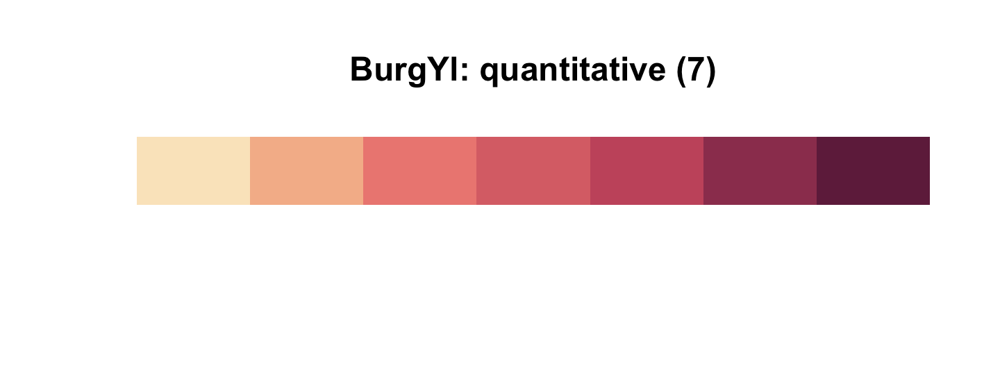
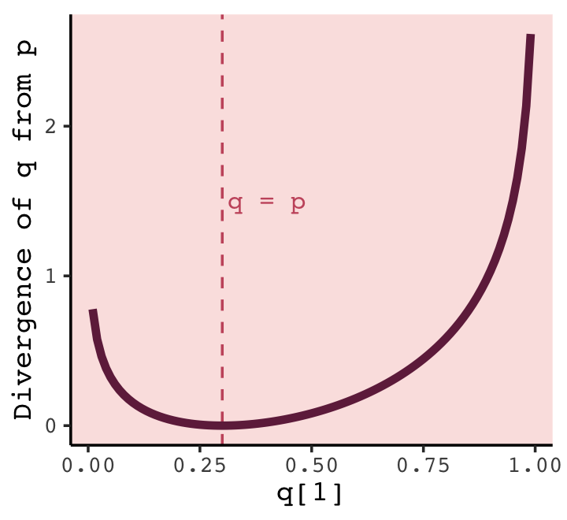
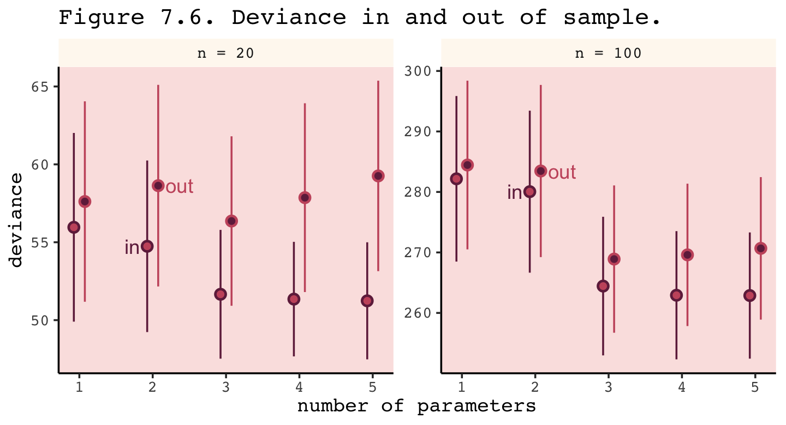
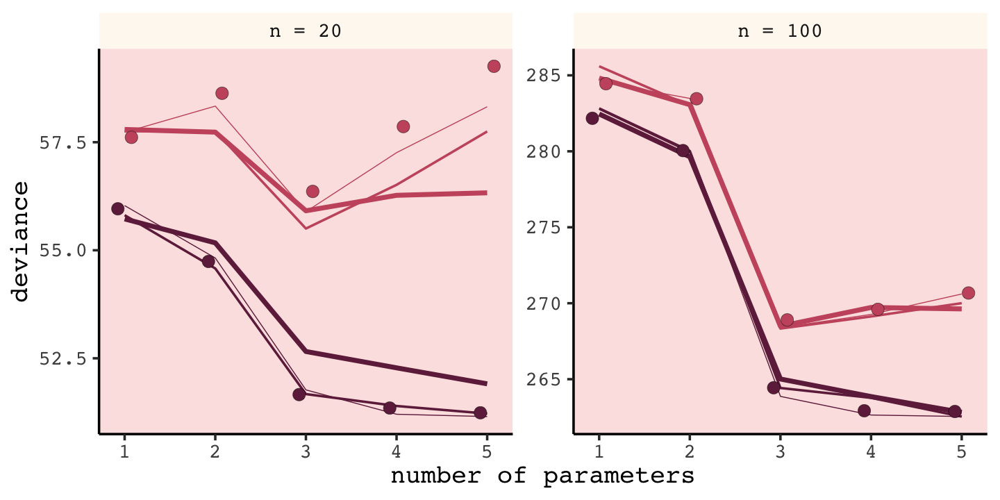
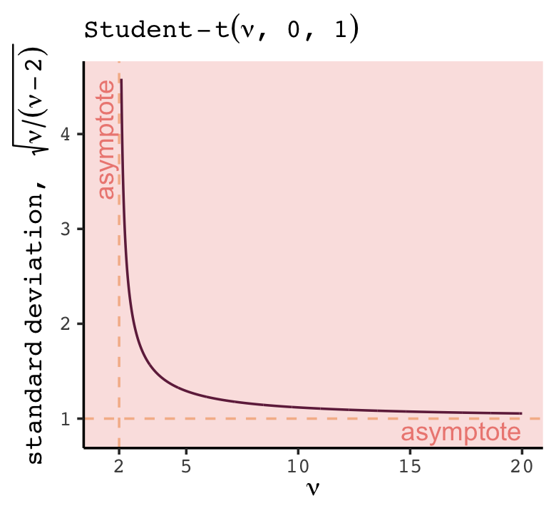
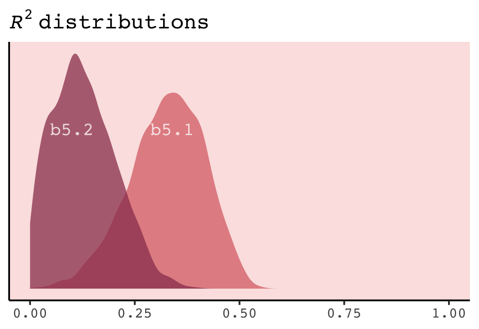

7 Ulysses’ Compass
In this chapter we contend with two contrasting kinds of statistical error:
- overfitting, “which leads to poor prediction by learning too much from the data”
- underfitting, “which leads to poor prediction by learning too little from the data” (McElreath, 2020a, p. 192, emphasis added)
Our job is to carefully navigate among these monsters. There are two common families of approaches. The first approach is to use a regularizing prior to tell the model not to get too excited by the data. This is the same device that non-Bayesian methods refer to as “penalized likelihood.” The second approach is to use some scoring device, like information criteria or cross-validation, to model the prediction task and estimate predictive accuracy. Both families of approaches are routinely used in the natural and social sciences. Furthermore, they can be–maybe should be–used in combination. So it’s worth understanding both, as you’re going to need both at some point. (p. 192, emphasis in the original)
There’s a lot going on in this chapter. More more practice with these ideas, check out Yarkoni & Westfall (2017), Choosing prediction over explanation in psychology: Lessons from machine learning.
7.0.0.1 Rethinking stargazing.
The most common form of model selection among practicing scientists is to search for a model in which every coefficient is statistically significant. Statisticians sometimes call this stargazing, as it is embodied by scanning for asterisks (\(^{\star \star}\)) trailing after estimates….
Whatever you think about null hypothesis significance testing in general, using it to select among structurally different models is a mistake–\(p\)-values are not designed to help you navigate between underfitting and overfitting. (p. 193, emphasis in the original).
McElreath spent little time discussing \(p\)-values and null hypothesis testing in the text. If you’d like to learn more from a Bayesian perspective, you might check out the first several chapters (particularly 10–13) in Kruschke’s (2015) text and my (2023a) ebook translating it to brms and the tidyverse. The great Frank Harrell has complied A Litany of Problems With p-values. Also, don’t miss the statement on \(p\)-values released by the American Statistical Association (Wasserstein & Lazar, 2016).
7.1 The problem with parameters
The \(R^2\) is a popular way to measure how well you can retrodict the data. It traditionally follows the form
\[R^2 = \frac{\text{var(outcome)} - \text{var(residuals)}}{\text{var(outcome)}} = 1 - \frac{\text{var(residuals)}}{\text{var(outcome)}}.\]
By \(\operatorname{var}()\), of course, we meant variance (i.e., what you get from the var() function in R). McElreath is not a fan of the \(R^2\). But it’s important in my field, so instead of a summary at the end of the chapter, we will cover the Bayesian version of \(R^2\) and how to use it in brms.
7.1.1 More parameters (almost) always improve fit.
We’ll start off by making the data with brain size and body size for seven species.
library(tidyverse)
(
d <-
tibble(species = c("afarensis", "africanus", "habilis", "boisei", "rudolfensis", "ergaster", "sapiens"),
brain = c(438, 452, 612, 521, 752, 871, 1350),
mass = c(37.0, 35.5, 34.5, 41.5, 55.5, 61.0, 53.5))
)## # A tibble: 7 × 3
## species brain mass
## <chr> <dbl> <dbl>
## 1 afarensis 438 37
## 2 africanus 452 35.5
## 3 habilis 612 34.5
## 4 boisei 521 41.5
## 5 rudolfensis 752 55.5
## 6 ergaster 871 61
## 7 sapiens 1350 53.5Let’s get ready for Figure 7.2. The plots in this chapter will be characterized by theme_classic() + theme(text = element_text(family = "Courier")). Our color palette will come from the rcartocolor package (Nowosad, 2019), which provides color schemes designed by ‘CARTO’.
library(rcartocolor)The specific palette we’ll be using is “BurgYl.” In addition to palettes, the rcartocolor package offers a few convenience functions which make it easier to use their palettes. The carto_pal() function will return the HEX numbers associated with a given palette’s colors and the display_carto_pal() function will display the actual colors.
carto_pal(7, "BurgYl")## [1] "#fbe6c5" "#f5ba98" "#ee8a82" "#dc7176" "#c8586c" "#9c3f5d" "#70284a"display_carto_pal(7, "BurgYl")
We’ll be using a diluted version of the third color for the panel background (i.e., theme(panel.background = element_rect(fill = alpha(carto_pal(7, "BurgYl")[3], 1/4)))) and the darker purples for other plot elements. Here’s the plot.
library(ggrepel)
theme_set(
theme_classic() +
theme(text = element_text(family = "Courier"),
panel.background = element_rect(fill = alpha(carto_pal(7, "BurgYl")[3], 1/4)))
)
d %>%
ggplot(aes(x = mass, y = brain, label = species)) +
geom_point(color = carto_pal(7, "BurgYl")[5]) +
geom_text_repel(size = 3, color = carto_pal(7, "BurgYl")[7], family = "Courier", seed = 438) +
labs(subtitle = "Average brain volume by body\nmass for six hominin species",
x = "body mass (kg)",
y = "brain volume (cc)") +
xlim(30, 65)Before fitting our models,
we want to standardize body mass–give it mean zero and standard deviation one–and rescale the outcome, brain volume, so that the largest observed value is 1. Why not standardize brain volume as well? Because we want to preserve zero as a reference point: No brain at all. You can’t have negative brain. I don’t think. (p. 195)
d <-
d %>%
mutate(mass_std = (mass - mean(mass)) / sd(mass),
brain_std = brain / max(brain))Our first statistical model will follow the form
\[\begin{align*} \text{brain_std}_i & \sim \operatorname{Normal}(\mu_i, \sigma) \\ \mu_i & = \alpha + \beta \text{mass_std}_i \\ \alpha & \sim \operatorname{Normal}(0.5, 1) \\ \beta & \sim \operatorname{Normal}(0, 10) \\ \sigma & \sim \operatorname{Log-Normal}(0, 1). \end{align*}\]
This simply says that the average brain volume \(b_i\) of species \(i\) is a linear function of its body mass \(m_i\). Now consider what the priors imply. The prior for \(\alpha\) is just centered on the mean brain volume (rescaled) in the data. So it says that the average species with an average body mass has a brain volume with an 89% credible interval from about −1 to 2. That is ridiculously wide and includes impossible (negative) values. The prior for \(\beta\) is very flat and centered on zero. It allows for absurdly large positive and negative relationships. These priors allow for absurd inferences, especially as the model gets more complex. And that’s part of the lesson. (p. 196)
Fire up brms.
library(brms)A careful study of McElreath’s R code 7.3 will show he is modeling log_sigma, rather than \(\sigma\). There are ways to do this with brms (see Bürkner, 2022a), but I’m going to keep things simple, here. Our approach will be to follow the above equation more literally and just slap the \(\operatorname{Log-Normal}(0, 1)\) prior directly onto \(\sigma\).
b7.1 <-
brm(data = d,
family = gaussian,
brain_std ~ 1 + mass_std,
prior = c(prior(normal(0.5, 1), class = Intercept),
prior(normal(0, 10), class = b),
prior(lognormal(0, 1), class = sigma)),
iter = 2000, warmup = 1000, chains = 4, cores = 4,
seed = 7,
file = "fits/b07.01")Check the model summary.
print(b7.1)## Family: gaussian
## Links: mu = identity; sigma = identity
## Formula: brain_std ~ 1 + mass_std
## Data: d (Number of observations: 7)
## Draws: 4 chains, each with iter = 2000; warmup = 1000; thin = 1;
## total post-warmup draws = 4000
##
## Population-Level Effects:
## Estimate Est.Error l-95% CI u-95% CI Rhat Bulk_ESS Tail_ESS
## Intercept 0.53 0.11 0.29 0.75 1.00 2045 1746
## mass_std 0.17 0.12 -0.07 0.41 1.00 2595 1786
##
## Family Specific Parameters:
## Estimate Est.Error l-95% CI u-95% CI Rhat Bulk_ESS Tail_ESS
## sigma 0.27 0.11 0.13 0.55 1.00 1587 2012
##
## Draws were sampled using sampling(NUTS). For each parameter, Bulk_ESS
## and Tail_ESS are effective sample size measures, and Rhat is the potential
## scale reduction factor on split chains (at convergence, Rhat = 1).As we’ll learn later on, brms already has a convenience function for computing the Bayesian \(R^2\). At this point in the chapter, we’ll follow along and make a brms-centric version of McElreath’s R2_is_bad(). But because part of our version of R2_is_bad() will contain the brms::predict() function, I’m going to add a seed argument to make the results more reproducible.
R2_is_bad <- function(brm_fit, seed = 7, ...) {
set.seed(seed)
p <- predict(brm_fit, summary = F, ...)
# in my experience, it's more typical to define residuals as the criterion minus the predictions
r <- d$brain_std - apply(p, 2, mean)
1 - rethinking::var2(r) / rethinking::var2(d$brain_std)
}Here’s the estimate for our \(R^2\).
R2_is_bad(b7.1)## [1] 0.4875197Do note that,
in principle, the Bayesian approach mandates that we do this for each sample from the posterior. But \(R^2\) is traditionally computed only at the mean prediction. So we’ll do that as well here. Later in the chapter you’ll learn a properly Bayesian score that uses the entire posterior distribution. (p. 197)
Now fit the quadratic through the fifth-order polynomial models using update().
# quadratic
b7.2 <-
update(b7.1,
newdata = d,
formula = brain_std ~ 1 + mass_std + I(mass_std^2),
iter = 2000, warmup = 1000, chains = 4, cores = 4,
seed = 7,
file = "fits/b07.02")
# cubic
b7.3 <-
update(b7.1,
newdata = d,
formula = brain_std ~ 1 + mass_std + I(mass_std^2) + I(mass_std^3),
iter = 2000, warmup = 1000, chains = 4, cores = 4,
seed = 7,
control = list(adapt_delta = .9),
file = "fits/b07.03")
# fourth-order
b7.4 <-
update(b7.1,
newdata = d,
formula = brain_std ~ 1 + mass_std + I(mass_std^2) + I(mass_std^3) + I(mass_std^4),
iter = 2000, warmup = 1000, chains = 4, cores = 4,
seed = 7,
control = list(adapt_delta = .995),
file = "fits/b07.04")
# fifth-order
b7.5 <-
update(b7.1,
newdata = d,
formula = brain_std ~ 1 + mass_std + I(mass_std^2) + I(mass_std^3) + I(mass_std^4) + I(mass_std^5),
iter = 2000, warmup = 1000, chains = 4, cores = 4,
seed = 7,
control = list(adapt_delta = .99999),
file = "fits/b07.05")You may have noticed we fiddled with the adapt_delta setting for some of the models. When you try to fit complex models with few data points and wide priors, that can cause difficulties for Stan. I’m not going to get into the details on what adapt_delta does, right now. But it’ll make appearances in later chapters and we’ll more formally introduce it in Section 13.4.2.
Now returning to the text,
That last model,
m7.6, has one trick in it. The standard deviation is replaced with a constant value 0.001. The model will not work otherwise, for a very important reason that will become clear as we plot these monsters. (p. 198)
By “last model, m7.6,” McElreath was referring to the sixth-order polynomial, fit on page 199. McElreath’s rethinking package is set up so the syntax is simple to replacing \(\sigma\) with a constant value. We can do this with brms, too, but it’ll take more effort. If we want to fix \(\sigma\) to a constant, we’ll need to define a custom likelihood. Bürkner explained how to do so in his (2022b) vignette, Define custom response distributions with brms. I’m not going to explain this in great detail, here. In brief, first we use the custom_family() function to define the name and parameters of a custom_normal() likelihood that will set \(\sigma\) to a constant value, 0.001. Second, we’ll define some functions for Stan which are not defined in Stan itself and save them as stan_funs. Third, we make a stanvar() statement which will allow us to pass our stan_funs to brm().
custom_normal <- custom_family(
"custom_normal", dpars = "mu",
links = "identity",
type = "real"
)
stan_funs <- "real custom_normal_lpdf(real y, real mu) {
return normal_lpdf(y | mu, 0.001);
}
real custom_normal_rng(real mu) {
return normal_rng(mu, 0.001);
}
"
stanvars <- stanvar(scode = stan_funs, block = "functions")Now we can fit the model by setting family = custom_normal. Note that since we’ve set \(\sigma = 0.001\), we don’t need to include a prior for \(\sigma\). Also notice our stanvars = stanvars line.
b7.6 <-
brm(data = d,
family = custom_normal,
brain_std ~ 1 + mass_std + I(mass_std^2) + I(mass_std^3) + I(mass_std^4) + I(mass_std^5) + I(mass_std^6),
prior = c(prior(normal(0.5, 1), class = Intercept),
prior(normal(0, 10), class = b)),
iter = 2000, warmup = 1000, chains = 4, cores = 4,
seed = 7,
stanvars = stanvars,
file = "fits/b07.06")Before we can do our variant of Figure 7.3, we’ll need to define a few more custom functions to work with b7.6. The posterior_epred_custom_normal() function is required for brms::fitted() to work with our family = custom_normal brmsfit object. Same thing for posterior_predict_custom_normal() and brms::predict(). Though we won’t need it until Section 7.2.5, we’ll also define log_lik_custom_normal so we can use the log_lik() function for any models fit with family = custom_normal. Before all that, we need to throw in a line with the expose_functions() function. If you want to understand why, read up in Bürkner’s (2022b) vignette. For now, just go with it.
expose_functions(b7.6, vectorize = TRUE)
posterior_epred_custom_normal <- function(prep) {
mu <- prep$dpars$mu
mu
}
posterior_predict_custom_normal <- function(i, prep, ...) {
mu <- prep$dpars$mu
mu
custom_normal_rng(mu)
}
log_lik_custom_normal <- function(i, prep) {
mu <- prep$dpars$mu
y <- prep$data$Y[i]
custom_normal_lpdf(y, mu)
}Okay, here’s how we might plot the result for the first model, b7.1.
library(tidybayes)
nd <- tibble(mass_std = seq(from = -2, to = 2, length.out = 100))
fitted(b7.1,
newdata = nd,
probs = c(.055, .945)) %>%
data.frame() %>%
bind_cols(nd) %>%
ggplot(aes(x = mass_std, y = Estimate)) +
geom_lineribbon(aes(ymin = Q5.5, ymax = Q94.5),
color = carto_pal(7, "BurgYl")[7], linewidth = 1/2,
fill = alpha(carto_pal(7, "BurgYl")[6], 1/3)) +
geom_point(data = d,
aes(y = brain_std),
color = carto_pal(7, "BurgYl")[7]) +
labs(subtitle = bquote(italic(R)^2==.(round(R2_is_bad(b7.1), digits = 2))),
x = "body mass (standardized)",
y = "brain volume (standardized)") +
coord_cartesian(xlim = range(d$mass_std))To slightly repurpose a quote from McElreath:
We’ll want to do this for the next several models, so let’s write a function to make it repeatable. If you find yourself writing code more than once, it is usually saner to write a function and call the function more than once instead. (p. 197)
Our make_figure7.3() function will wrap the simulation, data wrangling, and plotting code all in one. It takes two arguments, the first of which defines which fit object we’d like to plot. If you look closely at Figure 7.3 in the text, you’ll notice that the range of the \(y\)-axis changes in the last three plots. Our second argument, ylim, will allow us to vary those parameters across subplots.
make_figure7.3 <- function(brms_fit, ylim = range(d$brain_std)) {
# compute the R2
r2 <- R2_is_bad(brms_fit)
# define the new data
nd <- tibble(mass_std = seq(from = -2, to = 2, length.out = 200))
# simulate and wrangle
fitted(brms_fit, newdata = nd, probs = c(.055, .945)) %>%
data.frame() %>%
bind_cols(nd) %>%
# plot!
ggplot(aes(x = mass_std)) +
geom_lineribbon(aes(y = Estimate, ymin = Q5.5, ymax = Q94.5),
color = carto_pal(7, "BurgYl")[7], linewidth = 1/2,
fill = alpha(carto_pal(7, "BurgYl")[6], 1/3)) +
geom_point(data = d,
aes(y = brain_std),
color = carto_pal(7, "BurgYl")[7]) +
labs(subtitle = bquote(italic(R)^2==.(round(r2, digits = 2))),
x = "body mass (std)",
y = "brain volume (std)") +
coord_cartesian(xlim = c(-1.2, 1.5),
ylim = ylim)
}Here we make and save the six subplots in bulk.
p1 <- make_figure7.3(b7.1)
p2 <- make_figure7.3(b7.2)
p3 <- make_figure7.3(b7.3)
p4 <- make_figure7.3(b7.4, ylim = c(.25, 1.1))
p5 <- make_figure7.3(b7.5, ylim = c(.1, 1.4))
p6 <- make_figure7.3(b7.6, ylim = c(-0.25, 1.5)) +
geom_hline(yintercept = 0, color = carto_pal(7, "BurgYl")[2], linetype = 2) Now use patchwork syntax to bundle them all together.
library(patchwork)
((p1 | p2) / (p3 | p4) / (p5 | p6)) +
plot_annotation(title = "Figure7.3. Polynomial linear models of increasing\ndegree for the hominin data.")It’s not clear, to me, why our brms-based 89% intervals are so much broader than those in the text. But if you do fit the size models with rethinking::quap() and compare the summaries, you’ll see our brms-based parameters are systemically less certain than those fit with quap(). In you have an answer or perhaps even an alternative workflow to solve the issue, share on GitHub.
If you really what the axes scaled in the original metrics of the variables rather than their standardized form, you can use the re-scaling techniques from back in Section 4.5.1.0.1.
“This is a general phenomenon: If you adopt a model family with enough parameters, you can fit the data exactly. But such a model will make rather absurd predictions for yet-to-be-observed cases” (pp. 199–201).
7.1.1.1 Rethinking: Model fitting as compression.
Another perspective on the absurd model just above is to consider that model fitting can be considered a form of data compression. Parameters summarize relationships among the data. These summaries compress the data into a simpler form, although with loss of information (“lossy” compression) about the sample. The parameters can then be used to generate new data, effectively decompressing the data. (p. 201, emphasis in the original)
7.1.2 Too few parameters hurts, too.
The overfit polynomial models fit the data extremely well, but they suffer for this within-sample accuracy by making nonsensical out-of-sample predictions. In contrast, underfitting produces models that are inaccurate both within and out of sample. They learn too little, failing to recover regular features of the sample. (p. 201, emphasis in the original)
To explore the distinctions between overfitting and underfitting, we’ll need to refit b7.1 and b7.4 several times after serially dropping one of the rows in the data. You can filter() by row_number() to drop rows in a tidyverse kind of way. For example, we can drop the second row of d like this.
d %>%
mutate(row = 1:n()) %>%
filter(row_number() != 2)## # A tibble: 6 × 6
## species brain mass mass_std brain_std row
## <chr> <dbl> <dbl> <dbl> <dbl> <int>
## 1 afarensis 438 37 -0.779 0.324 1
## 2 habilis 612 34.5 -1.01 0.453 3
## 3 boisei 521 41.5 -0.367 0.386 4
## 4 rudolfensis 752 55.5 0.917 0.557 5
## 5 ergaster 871 61 1.42 0.645 6
## 6 sapiens 1350 53.5 0.734 1 7In his Overthinking: Dropping rows box (p. 202), McElreath encouraged us to take a look at the brain_loo_plot() function to get a sense of how he made his Figure 7.4. Here it is.
library(rethinking)
brain_loo_plot## function (fit, atx = c(35, 47, 60), aty = c(450, 900, 1300),
## xlim, ylim, npts = 100)
## {
## post <- extract.samples(fit)
## n <- dim(post$b)[2]
## if (is.null(n))
## n <- 1
## if (missing(xlim))
## xlim <- range(d$mass_std)
## else xlim <- (xlim - mean(d$mass))/sd(d$mass)
## if (missing(ylim))
## ylim <- range(d$brain_std)
## else ylim <- ylim/max(d$brain)
## plot(d$brain_std ~ d$mass_std, xaxt = "n", yaxt = "n", xlab = "body mass (kg)",
## ylab = "brain volume (cc)", col = rangi2, pch = 16, xlim = xlim,
## ylim = ylim)
## axis_unscale(1, atx, d$mass)
## axis_unscale(2, at = aty, factor = max(d$brain))
## d <- as.data.frame(fit@data)
## for (i in 1:nrow(d)) {
## di <- d[-i, ]
## m_temp <- quap(fit@formula, data = di, start = list(b = rep(0,
## n)))
## xseq <- seq(from = xlim[1] - 0.2, to = xlim[2] + 0.2,
## length.out = npts)
## l <- link(m_temp, data = list(mass_std = xseq), refresh = 0)
## mu <- apply(l, 2, mean)
## lines(xseq, mu, lwd = 2, col = col.alpha("black", 0.3))
## }
## model_name <- deparse(match.call()[[2]])
## mtext(model_name, adj = 0)
## }
## <bytecode: 0x7fe8fe449450>
## <environment: namespace:rethinking>Though we’ll be taking a slightly different route than the one outlined in McElreath’s brain_loo_plot() function, we can glean some great insights. For example, we’ll be refitting our brms models with update().
b7.1.1 <-
update(b7.1,
newdata = filter(d, row_number() != 1),
iter = 2000, warmup = 1000, chains = 4, cores = 4,
seed = 7,
file = "fits/b07.01.1")
print(b7.1.1)## Family: gaussian
## Links: mu = identity; sigma = identity
## Formula: brain_std ~ 1 + mass_std
## Data: filter(d, row_number() != 1) (Number of observations: 6)
## Draws: 4 chains, each with iter = 2000; warmup = 1000; thin = 1;
## total post-warmup draws = 4000
##
## Population-Level Effects:
## Estimate Est.Error l-95% CI u-95% CI Rhat Bulk_ESS Tail_ESS
## Intercept 0.54 0.14 0.27 0.82 1.00 2385 1508
## mass_std 0.15 0.16 -0.16 0.46 1.00 2245 1692
##
## Family Specific Parameters:
## Estimate Est.Error l-95% CI u-95% CI Rhat Bulk_ESS Tail_ESS
## sigma 0.32 0.17 0.14 0.77 1.00 1213 1479
##
## Draws were sampled using sampling(NUTS). For each parameter, Bulk_ESS
## and Tail_ESS are effective sample size measures, and Rhat is the potential
## scale reduction factor on split chains (at convergence, Rhat = 1).You can see by the newdata statement that b7.1.1 is fit on the d data after dropping the first row. Here’s how we might amend out plotting strategy from before to visualize the posterior mean for the model-implied trajectory.
fitted(b7.1.1,
newdata = nd) %>%
data.frame() %>%
bind_cols(nd) %>%
ggplot(aes(x = mass_std)) +
geom_line(aes(y = Estimate),
color = carto_pal(7, "BurgYl")[7], linewidth = 1/2, alpha = 1/2) +
geom_point(data = d,
aes(y = brain_std),
color = carto_pal(7, "BurgYl")[7]) +
labs(subtitle = "b7.1.1",
x = "body mass (std)",
y = "brain volume (std)") +
coord_cartesian(xlim = range(d$mass_std),
ylim = range(d$brain_std))Now we’ll make a brms-oriented version of McElreath’s brain_loo_plot() function. Our version brain_loo_lines() will refit the model and extract the lines information in one step. We’ll leave the plotting for a second step.
brain_loo_lines <- function(brms_fit, row, ...) {
# refit the model
new_fit <-
update(brms_fit,
newdata = filter(d, row_number() != row),
iter = 2000, warmup = 1000, chains = 4, cores = 4,
seed = 7,
refresh = 0,
...)
# pull the lines values
fitted(new_fit,
newdata = nd) %>%
data.frame() %>%
select(Estimate) %>%
bind_cols(nd)
}Here’s how brain_loo_lines() works.
brain_loo_lines(b7.1, row = 1) %>%
glimpse()## Rows: 100
## Columns: 2
## $ Estimate <dbl> 0.2371488, 0.2433511, 0.2495535, 0.2557558, 0.2619582, 0.2681606, 0.2743629, 0.28…
## $ mass_std <dbl> -2.0000000, -1.9595960, -1.9191919, -1.8787879, -1.8383838, -1.7979798, -1.757575…Working within the tidyverse paradigm, we’ll make a tibble with the predefined row values. We will then use purrr::map() to plug those row values into brain_loo_lines(), which will return the desired posterior mean values for each corresponding value of mass_std. Here we do that for both b7.1 and b7.4.
b7.1_fits <-
tibble(row = 1:7) %>%
mutate(post = purrr::map(row, ~brain_loo_lines(brms_fit = b7.1, row = .))) %>%
unnest(post)
b7.4_fits <-
tibble(row = 1:7) %>%
mutate(post = purrr::map(row, ~brain_loo_lines(brms_fit = b7.4,
row = .,
control = list(adapt_delta = .999)))) %>%
unnest(post)Now for each, pump those values into ggplot(), customize the settings, and combine the two ggplots to make the full Figure 7.4.
# left
p1 <-
b7.1_fits %>%
ggplot(aes(x = mass_std)) +
geom_line(aes(y = Estimate, group = row),
color = carto_pal(7, "BurgYl")[7], linewidth = 1/2, alpha = 1/2) +
geom_point(data = d,
aes(y = brain_std),
color = carto_pal(7, "BurgYl")[7]) +
labs(subtitle = "b7.1",
x = "body mass (std)",
y = "brain volume (std)") +
coord_cartesian(xlim = range(d$mass_std),
ylim = range(d$brain_std))
# right
p2 <-
b7.4_fits %>%
ggplot(aes(x = mass_std, y = Estimate)) +
geom_line(aes(group = row),
color = carto_pal(7, "BurgYl")[7], linewidth = 1/2, alpha = 1/2) +
geom_point(data = d,
aes(y = brain_std),
color = carto_pal(7, "BurgYl")[7]) +
labs(subtitle = "b7.4",
x = "body mass (std)",
y = "brain volume (std)") +
coord_cartesian(xlim = range(d$mass_std),
ylim = c(-0.1, 1.4))
# combine
p1 + p2“Notice that the straight lines hardly vary, while the curves fly about wildly. This is a general contrast between underfit and overfit models: sensitivity to the exact composition of the sample used to fit the model” (p. 201).
7.1.2.1 Rethinking: Bias and variance.
The underfitting/overfitting dichotomy is often described as the bias-variance trade-off. While not exactly the same distinction, the bias-variance trade-off addresses the same problem. “Bias” is related to underfitting, while “variance” is related to overfitting. These terms are confusing, because they are used in many different ways in different contexts, even within statistics. The term “bias” also sounds like a bad thing, even though increasing bias often leads to better predictions. (p. 201, emphasis in the original)
Take a look at Yarkoni & Westfall (2017) for more on the bias-variance trade-off. As McElreath indicated in his endnote #104 (p. 563), Hastie, Tibshirani and Friedman (2009) broadly cover these ideas in their freely-downloadable text, The elements of statistical learning.
7.2 Entropy and accuracy
So how do we navigate between the hydra of overfitting and the vortex of underfitting? Whether you end up using regularization or information criteria or both, the first thing you must do is pick a criterion of model performance. What do you want the model to do well at? We’ll call this criterion the target, and in this section you’ll see how information theory provides a common and useful target. (p. 202, emphasis in the original)
7.2.1 Firing the weatherperson.
If you let rain = 1 and sun = 0, here’s a way to make a plot of the first table of page 203, the weatherperson’s predictions.
weatherperson <-
tibble(day = 1:10,
prediction = rep(c(1, 0.6), times = c(3, 7)),
observed = rep(1:0, times = c(3, 7)))
weatherperson %>%
pivot_longer(-day) %>%
ggplot(aes(x = day, y = name, fill = value)) +
geom_tile(color = "white") +
geom_text(aes(label = value, color = value == 0)) +
scale_x_continuous(breaks = 1:10, expand = c(0, 0)) +
scale_y_discrete(NULL, expand = c(0, 0)) +
scale_fill_viridis_c(direction = -1) +
scale_color_manual(values = c("white", "black")) +
theme(axis.ticks.y = element_blank(),
legend.position = "none")
Here’s how the newcomer fared:
newcomer <-
tibble(day = 1:10,
prediction = 0,
observed = rep(1:0, times = c(3, 7)))
newcomer %>%
pivot_longer(-day) %>%
ggplot(aes(x = day, y = name, fill = value)) +
geom_tile(color = "white") +
geom_text(aes(label = value, color = value == 0)) +
scale_x_continuous(breaks = 1:10, expand = c(0, 0)) +
scale_y_discrete(NULL, expand = c(0, 0)) +
scale_fill_viridis_c(direction = -1) +
scale_color_manual(values = c("white", "black")) +
theme(axis.ticks.y = element_blank(),
legend.position = "none")If we do the math entailed in the tibbles, we’ll see why the newcomer could boast “I’m the best person for the job” (p. 203).
weatherperson %>%
bind_rows(newcomer) %>%
mutate(person = rep(c("weatherperson", "newcomer"), each = n()/2),
hit = ifelse(prediction == observed, 1, 1 - prediction - observed)) %>%
group_by(person) %>%
summarise(hit_rate = mean(hit))## # A tibble: 2 × 2
## person hit_rate
## <chr> <dbl>
## 1 newcomer 0.7
## 2 weatherperson 0.587.2.1.1 Costs and benefits.
Our new points variable doesn’t fit into the nice color-based geom_tile() plots from above, but we can still do the math.
bind_rows(weatherperson,
newcomer) %>%
mutate(person = rep(c("weatherperson", "newcomer"), each = n()/2),
points = ifelse(observed == 1 & prediction != 1, -5,
ifelse(observed == 1 & prediction == 1, -1,
-1 * prediction))) %>%
group_by(person) %>%
summarise(happiness = sum(points))## # A tibble: 2 × 2
## person happiness
## <chr> <dbl>
## 1 newcomer -15
## 2 weatherperson -7.27.2.1.2 Measuring accuracy.
Consider computing the probability of predicting the exact sequence of days. This means computing the probability of a correct prediction for each day. Then multiply all of these probabilities together to get the joint probability of correctly predicting the observed sequence. This is the same thing as the joint likelihood, which you’ve been using up to this point to fit models with Bayes’ theorem. This is the definition of accuracy that is maximized by the correct model.
In this light, the newcomer looks even worse. (p. 204)
bind_rows(weatherperson,
newcomer) %>%
mutate(person = rep(c("weatherperson", "newcomer"), each = n() / 2),
hit = ifelse(prediction == observed, 1, 1 - prediction - observed)) %>%
count(person, hit) %>%
mutate(power = hit ^ n,
term = rep(letters[1:2], times = 2)) %>%
select(person, term, power) %>%
pivot_wider(names_from = term,
values_from = power) %>%
mutate(probability_correct_sequence = a * b)## # A tibble: 2 × 4
## person a b probability_correct_sequence
## <chr> <dbl> <dbl> <dbl>
## 1 newcomer 0 1 0
## 2 weatherperson 0.00164 1 0.001647.2.2 Information and uncertainty.
Within the context of information theory (Shannon, 1948; also Cover & Thomas, 2006), information is “the reduction in uncertainty when we learn an outcome” (p. 205). Information entropy is a way of measuring that uncertainty in a way that is (a) continuous, (b) increases as the number of possible events increases, and (c) is additive. The formula for information entropy is:
\[H(p) = - \text E \log (p_i) = - \sum_{i = 1}^n p_i \log (p_i).\]
McElreath put it in words as: “The uncertainty contained in a probability distribution is the average log-probability of an event.” (p. 206). We’ll compute the information entropy for weather at the first unnamed location, which we’ll call McElreath's house, and Abu Dhabi at once.
tibble(place = c("McElreath's house", "Abu Dhabi"),
p_rain = c(.3, .01)) %>%
mutate(p_shine = 1 - p_rain) %>%
group_by(place) %>%
mutate(h_p = (p_rain * log(p_rain) + p_shine * log(p_shine)) %>% mean() * -1)## # A tibble: 2 × 4
## # Groups: place [2]
## place p_rain p_shine h_p
## <chr> <dbl> <dbl> <dbl>
## 1 McElreath's house 0.3 0.7 0.611
## 2 Abu Dhabi 0.01 0.99 0.0560Did you catch how we used the equation \(H(p) = - \sum_{i = 1}^n p_i \log (p_i)\) in our mutate() code, there? Our computation indicated the uncertainty is less in Abu Dhabi because it rarely rains, there. If you have sun, rain and snow, the entropy for weather is:
p <- c(.7, .15, .15)
-sum(p * log(p))## [1] 0.8188085“These entropy values by themselves don’t mean much to us, though. Instead we can use them to build a measure of accuracy. That comes next” (p. 206).
7.2.3 From entropy to accuracy.
How can we use information entropy to say how far a model is from the target? The key lies in divergence:
Divergence: The additional uncertainty induced by using probabilities from one distribution to describe another distribution.
This is often known as Kullback-Leibler divergence or simply KL divergence. (p. 207, emphasis in the original, see Kullback & Leibler, 1951)
The formula for the KL divergence is
\[D_\text{KL} (p, q) = \sum_i p_i \big ( \log (p_i) - \log (q_i) \big ) = \sum_i p_i \log \left ( \frac{p_i}{q_i} \right ),\]
which is what McElreath described in plainer language as “the average difference in log probability between the target (\(p\)) and model (\(q\))” (p. 207).
In McElreath’s initial example
- \(p_1 = .3\),
- \(p_2 = .7\),
- \(q_1 = .25\), and
- \(q_2 = .75\).
With those values, we can compute \(D_\text{KL} (p, q)\) within a tibble like so:
tibble(p_1 = .3,
p_2 = .7,
q_1 = .25,
q_2 = .75) %>%
mutate(d_kl = (p_1 * log(p_1 / q_1)) + (p_2 * log(p_2 / q_2)))## # A tibble: 1 × 5
## p_1 p_2 q_1 q_2 d_kl
## <dbl> <dbl> <dbl> <dbl> <dbl>
## 1 0.3 0.7 0.25 0.75 0.00640Our systems in this section are binary (e.g., \(q = \{ q_i, q_2 \}\)). Thus if you know \(q_1 = .3\) you know of a necessity \(q_2 = 1 - q_1\). Therefore we can code the tibble for the next example, for when \(p = q\), like this.
tibble(p_1 = .3) %>%
mutate(p_2 = 1 - p_1,
q_1 = p_1) %>%
mutate(q_2 = 1 - q_1) %>%
mutate(d_kl = (p_1 * log(p_1 / q_1)) + (p_2 * log(p_2 / q_2)))## # A tibble: 1 × 5
## p_1 p_2 q_1 q_2 d_kl
## <dbl> <dbl> <dbl> <dbl> <dbl>
## 1 0.3 0.7 0.3 0.7 0Building off of that, you can make the data required for Figure 7.6 like this.
t <-
tibble(p_1 = .3,
p_2 = .7,
q_1 = seq(from = .01, to = .99, by = .01)) %>%
mutate(q_2 = 1 - q_1) %>%
mutate(d_kl = (p_1 * log(p_1 / q_1)) + (p_2 * log(p_2 / q_2)))
head(t)## # A tibble: 6 × 5
## p_1 p_2 q_1 q_2 d_kl
## <dbl> <dbl> <dbl> <dbl> <dbl>
## 1 0.3 0.7 0.01 0.99 0.778
## 2 0.3 0.7 0.02 0.98 0.577
## 3 0.3 0.7 0.03 0.97 0.462
## 4 0.3 0.7 0.04 0.96 0.383
## 5 0.3 0.7 0.05 0.95 0.324
## 6 0.3 0.7 0.06 0.94 0.276Now we have the data, plotting Figure 7.6 is a just geom_line() with stylistic flourishes.
t %>%
ggplot(aes(x = q_1, y = d_kl)) +
geom_vline(xintercept = .3, color = carto_pal(7, "BurgYl")[5], linetype = 2) +
geom_line(color = carto_pal(7, "BurgYl")[7], linewidth = 1.5) +
annotate(geom = "text", x = .4, y = 1.5, label = "q = p",
color = carto_pal(7, "BurgYl")[5], family = "Courier", size = 3.5) +
labs(x = "q[1]",
y = "Divergence of q from p")
What divergence can do for us now is help us contrast different approximations to \(p\). As an approximating function \(q\) becomes more accurate, \(D_\text{KL} (p, q)\) will shrink. So if we have a pair of candidate distributions, then the candidate that minimizes the divergence will be closest to the target. Since predictive models specify probabilities of events (observations), we can use divergence to compare the accuracy of models. (p. 208)
7.2.3.1 Rethinking: Divergence depends upon direction.
Here we see \(H(p, q) \neq H(q, p)\). That is, direction matters.
tibble(direction = c("Earth to Mars", "Mars to Earth"),
p_1 = c(.01, .7),
q_1 = c(.7, .01)) %>%
mutate(p_2 = 1 - p_1,
q_2 = 1 - q_1) %>%
mutate(d_kl = (p_1 * log(p_1 / q_1)) + (p_2 * log(p_2 / q_2)))## # A tibble: 2 × 6
## direction p_1 q_1 p_2 q_2 d_kl
## <chr> <dbl> <dbl> <dbl> <dbl> <dbl>
## 1 Earth to Mars 0.01 0.7 0.99 0.3 1.14
## 2 Mars to Earth 0.7 0.01 0.3 0.99 2.62The \(D_\text{KL}\) was double when applying Martian estimates to Terran estimates.
An important practical consequence of this asymmetry, in a model fitting context, is that if we use a distribution with high entropy to approximate an unknown true distribution of events, we will reduce the distance to the truth and therefore the error. This fact will help us build generalized linear models, later on in Chapter 10. (p. 209)
7.2.4 Estimating divergence.
The point of all the preceding material about information theory and divergence is to establish both:
How to measure the distance of a model from our target. Information theory gives us the distance measure we need, the KL divergence.
How to estimate the divergence. Having identified the right measure of distance, we now need a way to estimate it in real statistical modeling tasks. (p. 209)
Now we’ll start working on item #2.
Within the context of science, say we’ve labeled the true model for our topic of interest as \(p\). We don’t actually know what \(p\) is–we wouldn’t need the scientific method if we did. But say what we do have are two candidate models \(q\) and \(r\). We would at least like to know which is closer to \(p\). It turns out we don’t even need to know the absolute value of \(p\) to achieve this. Just the relative values of \(q\) and \(r\) will suffice. We express model \(q\)’s average log-probability as \(\text E \log (q_i)\). Extrapolating, the difference \(\text E \log (q_i) - \text E \log (r_i)\) gives us a sense about the divergence of both \(q\) and \(r\) from the target \(p\). That is, “we can compare the average log-probability from each model to get an estimate of the relative distance of each model from the target” (p. 210). Deviance and related statistics can help us towards this end. We define deviance as
\[D(q) = -2 \sum_i \log (q_i),\]
where \(i\) indexes each case and \(q_i\) is the likelihood for each case. Here’s the deviance from the OLS version of model m7.1.
lm(data = d, brain_std ~ mass_std) %>%
logLik() * -2## 'log Lik.' -5.985049 (df=3)In our \(D(q)\) formula, did you notice how we ended up multiplying \(\sum_i \log (p_i)\) by \(-2\)? Frequentists and Bayesians alike make use of information theory, KL divergence, and deviance. It turns out that the differences between two \(D(q)\) values follows a \(\chi^2\) distribution (Wilks, 1938), which frequentists like to reference for the purpose of null-hypothesis significance testing. Many Bayesians, however, are not into all that significance-testing stuff and they aren’t as inclined to multiply \(\sum_i \log (p_i)\) by \(-2\) for the simple purpose of scaling the associated difference distribution to follow the \(\chi^2\). If we leave that part out of the equation, we end up with
\[S(q) = \sum_i \log (q_i),\]
which we can think of as a log-probability score which is “the gold standard way to compare the predictive accuracy of different models. It is an estimate of \(\text E \log (q_i)\), just without the final step of dividing by the number of observations” (p. 210). When Bayesians compute \(S(q)\), they do so over the entire posterior distribution. “Doing this calculation correctly requires a little subtlety. The rethinking package has a function called lppd–log-pointwise-predictive-density–to do this calculation for quap models” (p. 210, emphasis in the original for the second time, but not the first). However, I’m now aware of a similar function within brms. If you’re willing to roll up your sleeves, a little, you can do it by hand. Here’s an example with b7.1.
log_lik(b7.1) %>%
data.frame() %>%
set_names(pull(d, species)) %>%
pivot_longer(everything(),
names_to = "species",
values_to = "logprob") %>%
mutate(prob = exp(logprob)) %>%
group_by(species) %>%
summarise(log_probability_score = mean(prob) %>% log())## # A tibble: 7 × 2
## species log_probability_score
## <chr> <dbl>
## 1 afarensis 0.368
## 2 africanus 0.392
## 3 boisei 0.384
## 4 ergaster 0.218
## 5 habilis 0.321
## 6 rudolfensis 0.259
## 7 sapiens -0.577“If you sum these values, you’ll have the total log-probability score for the model and data” (p. 210). Here we sum those \(\log (q_i)\) values up to compute \(S(q)\).
log_lik(b7.1) %>%
data.frame() %>%
set_names(pull(d, species)) %>%
pivot_longer(everything(),
names_to = "species",
values_to = "logprob") %>%
mutate(prob = exp(logprob)) %>%
group_by(species) %>%
summarise(log_probability_score = mean(prob) %>% log()) %>%
summarise(total_log_probability_score = sum(log_probability_score))## # A tibble: 1 × 1
## total_log_probability_score
## <dbl>
## 1 1.367.2.4.1 Overthinking: Computing the lppd.
The Bayesian version of the log-probability score, what we’ve been calling the lppd, has to account for the data and the posterior distribution. It follows the form
\[\text{lppd}(y, \Theta) = \sum_i \log \frac{1}{S} \sum_s p (y_i | \Theta_s),\]
where \(S\) is the number of samples and \(\Theta_s\) is the \(s\)-th set of sampled parameter values in the posterior distribution. While in principle this is easy–you just need to compute the probability (density) of each observation \(i\) for each sample \(s\), take the average, and then the logarithm–in practice it is not so easy. The reason is that doing arithmetic in a computer often requires some tricks to retain precision. (p. 210)
Our approach to McElreath’s R code 7.14 code will look very different. Going step by step, first we use the brms::log_lik() function.
log_prob <- log_lik(b7.1)
log_prob %>%
glimpse()## num [1:4000, 1:7] -0.0543 0.8522 -0.0777 -0.3936 0.2853 ...
## - attr(*, "dimnames")=List of 2
## ..$ : NULL
## ..$ : NULLThe log_lik() function returned a matrix. Each occasion in the original data, \(y_i\), got a column and each HMC chain iteration gets a row. Given we used the brms default of 4,000 HMC iterations, which corresponds to \(S = 4{,}000\) in the formula. Note the each of these \(7 \times 4{,}000\) values is a log-probability, not a probability itself. Thus, if we want to start summing these \(s\) iterations within cases, we’ll need to exponentiate them into probabilities.
prob <-
log_prob %>%
# make it a data frame
data.frame() %>%
# add case names, for convenience
set_names(pull(d, species)) %>%
# add an s iteration index, for convenience
mutate(s = 1:n()) %>%
# make it long
pivot_longer(-s,
names_to = "species",
values_to = "logprob") %>%
# compute the probability scores
mutate(prob = exp(logprob))
prob## # A tibble: 28,000 × 4
## s species logprob prob
## <int> <chr> <dbl> <dbl>
## 1 1 afarensis -0.0543 0.947
## 2 1 africanus -0.0255 0.975
## 3 1 habilis 0.104 1.11
## 4 1 boisei 0.00582 1.01
## 5 1 rudolfensis 0.104 1.11
## 6 1 ergaster 0.123 1.13
## 7 1 sapiens -0.468 0.626
## 8 2 afarensis 0.852 2.34
## 9 2 africanus 0.775 2.17
## 10 2 habilis 0.0499 1.05
## # … with 27,990 more rowsNow for each case, we take the average of each of the probability sores, and then take the log of that.
prob <-
prob %>%
group_by(species) %>%
summarise(log_probability_score = mean(prob) %>% log())
prob## # A tibble: 7 × 2
## species log_probability_score
## <chr> <dbl>
## 1 afarensis 0.368
## 2 africanus 0.392
## 3 boisei 0.384
## 4 ergaster 0.218
## 5 habilis 0.321
## 6 rudolfensis 0.259
## 7 sapiens -0.577For our last step, we sum those values up.
prob %>%
summarise(total_log_probability_score = sum(log_probability_score))## # A tibble: 1 × 1
## total_log_probability_score
## <dbl>
## 1 1.36That, my friends, is the log-pointwise-predictive-density, \(\text{lppd}(y, \Theta)\).
7.2.5 Scoring the right data.
Since we don’t have a lppd() function for brms, we’ll have to turn our workflow from the last two sections into a custom function. We’ll call it my_lppd().
my_lppd <- function(brms_fit) {
log_lik(brms_fit) %>%
data.frame() %>%
pivot_longer(everything(),
values_to = "logprob") %>%
mutate(prob = exp(logprob)) %>%
group_by(name) %>%
summarise(log_probability_score = mean(prob) %>% log()) %>%
summarise(total_log_probability_score = sum(log_probability_score))
}Here’s a tidyverse-style approach for computing the lppd for each of our six brms models.
tibble(name = str_c("b7.", 1:6)) %>%
mutate(brms_fit = purrr::map(name, get)) %>%
mutate(lppd = purrr::map(brms_fit, ~ my_lppd(.))) %>%
unnest(lppd)## # A tibble: 6 × 3
## name brms_fit total_log_probability_score
## <chr> <list> <dbl>
## 1 b7.1 <brmsfit> 1.36
## 2 b7.2 <brmsfit> 0.694
## 3 b7.3 <brmsfit> 0.817
## 4 b7.4 <brmsfit> 0.0687
## 5 b7.5 <brmsfit> 1.14
## 6 b7.6 <brmsfit> 25.9When we usually have data and use it to fit a statistical model, the data comprise a training sample. Parameters are estimated from it, and then we can imagine using those estimates to predict outcomes in a new sample, called the test sample. R is going to do all of this for you. But here’s the full procedure, in outline:
- Suppose there’s a training sample of size \(N\).
- Compute the posterior distribution of a model for the training sample, and compute the score on the training sample. Call this score \(D_\text{train}\).
- Suppose another sample of size \(N\) from the same process. This is the test sample.
- Compute the score on the test sample, using the posterior trained on the training sample. Call this new score \(D_\text{test}\).
The above is a thought experiment. It allows us to explore the distinction between accuracy measured in and out of sample, using a simple prediction scenario. (p. 211, emphasis in the original)
We’ll see how to carry out such a thought experiment in the next section.
7.2.5.1 Overthinking: Simulated training and testing.
McElreath plotted the results of such a thought experiment in implemented in R with the aid of his sim_train_test() function. If you’re interested in how the function pulls this off, execute the code below.
sim_train_testFor the sake of brevity, I am going to show the results of a simulation based on 1,000 simulations rather than McElreath’s 10,000.
# I've reduced this number by one order of magnitude to reduce computation time
n_sim <- 1e3
n_cores <- 8
kseq <- 1:5
# define the simulation function
my_sim <- function(k) {
print(k);
r <- mcreplicate(n_sim, sim_train_test(N = n, k = k), mc.cores = n_cores);
c(mean(r[1, ]), mean(r[2, ]), sd(r[1, ]), sd(r[2, ]))
}
# here's our dev object based on `N <- 20`
n <- 20
dev_20 <-
sapply(kseq, my_sim)
# here's our dev object based on N <- 100
n <- 100
dev_100 <-
sapply(kseq, my_sim)If you didn’t quite catch it, the simulation yields dev_20 and dev_100. We’ll want to convert them to tibbles, bind them together, and wrangle extensively before we’re ready to plot.
dev_tibble <-
rbind(dev_20, dev_100) %>%
data.frame() %>%
mutate(statistic = rep(c("mean", "sd"), each = 2) %>% rep(., times = 2),
sample = rep(c("in", "out"), times = 2) %>% rep(., times = 2),
n = rep(c("n = 20", "n = 100"), each = 4)) %>%
pivot_longer(-(statistic:n)) %>%
pivot_wider(names_from = statistic, values_from = value) %>%
mutate(n = factor(n, levels = c("n = 20", "n = 100")),
n_par = str_extract(name, "\\d+") %>% as.double()) %>%
mutate(n_par = ifelse(sample == "in", n_par - .075, n_par + .075))
head(dev_tibble)## # A tibble: 6 × 6
## sample n name mean sd n_par
## <chr> <fct> <chr> <dbl> <dbl> <dbl>
## 1 in n = 20 X1 56.0 6.06 0.925
## 2 in n = 20 X2 54.7 5.51 1.92
## 3 in n = 20 X3 51.7 4.13 2.92
## 4 in n = 20 X4 51.3 3.68 3.92
## 5 in n = 20 X5 51.2 3.76 4.92
## 6 out n = 20 X1 57.6 6.43 1.08Now we’re ready to make Figure 7.6.
# for the annotation
text <-
dev_tibble %>%
filter(n_par > 1.5,
n_par < 2.5) %>%
mutate(n_par = ifelse(sample == "in", n_par - 0.2, n_par + 0.29))
# plot!
dev_tibble %>%
ggplot(aes(x = n_par, y = mean,
ymin = mean - sd, ymax = mean + sd,
group = sample, color = sample, fill = sample)) +
geom_pointrange(shape = 21) +
geom_text(data = text,
aes(label = sample)) +
scale_fill_manual(values = carto_pal(7, "BurgYl")[c(5, 7)]) +
scale_color_manual(values = carto_pal(7, "BurgYl")[c(7, 5)]) +
labs(title = "Figure 7.6. Deviance in and out of sample.",
x = "number of parameters",
y = "deviance") +
theme(legend.position = "none",
strip.background = element_rect(fill = alpha(carto_pal(7, "BurgYl")[1], 1/4), color = "transparent")) +
facet_wrap(~ n, scale = "free_y")
Even with a substantially smaller \(N\), our simulation results matched up well with those in the text.
Deviance is an assessment of predictive accuracy, not of truth. The true model, in terms of which predictors are included, is not guaranteed to produce the best predictions. Likewise a false model, in terms of which predictors are included, is not guaranteed to produce poor predictions.
The point of this thought experiment is to demonstrate how deviance behaves, in theory. While deviance on training data always improves with additional predictor variables, deviance on future data may or may not, depending upon both the true data-generating process and how much data is available to precisely estimate the parameters. These facts form the basis for understanding both regularizing priors and information criteria. (p. 213)
7.3 Golem taming: regularization
The root of overfitting is a model’s tendency to get overexcited by the training sample. When the priors are flat or nearly flat, the machine interprets this to mean that every parameter value is equally plausible. As a result, the model returns a posterior that encodes as much of the training sample–as represented by the likelihood function–as possible.
One way to prevent a model from getting too excited by the training sample is to use a skeptical prior. By “skeptical,” I mean a prior that slows the rate of learning from the sample. The most common skeptical prior is a regularizing prior. Such a prior, when tuned properly, reduces overfitting while still allowing the model to learn the regular features of a sample. (p. 214, emphasis in the original)
In case you were curious, here’s how you might make a version Figure 7.7 with ggplot2.
tibble(x = seq(from = - 3.5, to = 3.5, by = 0.01)) %>%
mutate(a = dnorm(x, mean = 0, sd = 0.2),
b = dnorm(x, mean = 0, sd = 0.5),
c = dnorm(x, mean = 0, sd = 1.0)) %>%
pivot_longer(-x) %>%
ggplot(aes(x = x, y = value,
fill = name, color = name, linetype = name)) +
geom_area(alpha = 1/2, linewidth = 1/2, position = "identity") +
scale_fill_manual(values = carto_pal(7, "BurgYl")[7:5]) +
scale_color_manual(values = carto_pal(7, "BurgYl")[7:5]) +
scale_linetype_manual(values = 1:3) +
scale_x_continuous("parameter value", breaks = -3:3) +
scale_y_continuous(NULL, breaks = NULL) +
theme(legend.position = "none")
In our version of the plot, darker purple = more regularizing.
To prepare for Figure 7.8, we need to simulate. This time we’ll wrap the basic simulation code we used before into a function we’ll call make_sim(). Our make_sim() function has two parameters, n and b_sigma, both of which come from McElreath’s simulation code. So you’ll note that instead of hard coding the values for n and b_sigma within the simulation, we’re leaving them adjustable (i.e., sim_train_test(N = n, k = k, b_sigma = b_sigma)). Also notice that instead of saving the simulation results as objects, like before, we’re just converting them to a data frame with the data.frame() function at the bottom. Our goal is to use make_sim() within a purrr::map2() statement. The result will be a nested data frame into which we’ve saved the results of 6 simulations based off of two sample sizes (i.e., n = c(20, 100)) and three values of \(\sigma\) for our Gaussian \(\beta\) prior (i.e., b_sigma = c(1, .5, .2)).3
library(rethinking)
# I've reduced this number by one order of magnitude to reduce computation time
n_sim <- 1e3
n_cores <- 8
make_sim <- function(n, b_sigma) {
sapply(kseq, function(k) {
print(k);
r <- mcreplicate(n_sim, sim_train_test(N = n, k = k, b_sigma = b_sigma), # this is an augmented line of code
mc.cores = n_cores);
c(mean(r[1, ]), mean(r[2, ]), sd(r[1, ]), sd(r[2, ]))
}
) %>%
# this is a new line of code
data.frame()
}
s <-
crossing(n = c(20, 100),
b_sigma = c(1, 0.5, 0.2)) %>%
mutate(sim = map2(n, b_sigma, make_sim)) %>%
unnest(sim)We’ll follow the same principles for wrangling these data as we did those from the previous simulation, dev_tibble. After wrangling, we’ll feed the data directly into the code for our version of Figure 7.8.
# wrangle the simulation data
s %>%
mutate(statistic = rep(c("mean", "sd"), each = 2) %>% rep(., times = 3 * 2),
sample = rep(c("in", "out"), times = 2) %>% rep(., times = 3 * 2)) %>%
pivot_longer(-c(n:b_sigma, statistic:sample)) %>%
pivot_wider(names_from = statistic, values_from = value) %>%
mutate(n = str_c("n = ", n) %>% factor(., levels = c("n = 20", "n = 100")),
n_par = str_extract(name, "\\d+") %>% as.double()) %>%
# plot
ggplot(aes(x = n_par, y = mean,
group = interaction(sample, b_sigma))) +
geom_line(aes(color = sample, size = b_sigma %>% as.character())) +
# this function contains the data from the previous simulation
geom_point(data = dev_tibble,
aes(group = sample, fill = sample),
color = "black", shape = 21, size = 2.5, stroke = .1) +
scale_size_manual(values = c(1, 0.5, 0.2)) +
scale_fill_manual(values = carto_pal(7, "BurgYl")[c(7, 5)]) +
scale_color_manual(values = carto_pal(7, "BurgYl")[c(7, 5)]) +
labs(x = "number of parameters",
y = "deviance") +
theme(legend.position = "none",
strip.background = element_rect(fill = alpha(carto_pal(7, "BurgYl")[1], 1/4),
color = "transparent")) +
facet_wrap(~ n, scale = "free_y")## Warning: Using `size` aesthetic for lines was deprecated in ggplot2 3.4.0.
## ℹ Please use `linewidth` instead.
Our results don’t perfectly align with those in the text. I suspect his is because we used 1e3 iterations, rather than the 1e4 of the text. If you’d like to wait all night long for the simulation to yield more stable results, be my guest.
Regularizing priors are great, because they reduce overfitting. But if they are too skeptical, they prevent the model from learning from the data. When you encounter multilevel models in Chapter 13, you’ll see that their central device is to learn the strength of the prior from the data itself. So you can think of multilevel models as adaptive regularization, where the model itself tries to learn how skeptical it should be. (p. 216)
I found this connection difficult to grasp for a long time. Practice now and hopefully it’ll sink in for you faster than it did me.
7.3.0.1 Rethinking: Ridge regression.
Within the brms framework, you can do something like this with the horseshoe prior via the horseshoe() function. You can learn all about it from the horseshoe section of the brms reference manual (Bürkner, 2022i). Here’s an extract from the section:
The horseshoe prior is a special shrinkage prior initially proposed by Carvalho et al. (2009). It is symmetric around zero with fat tails and an infinitely large spike at zero. This makes it ideal for sparse models that have many regression coefficients, although only a minority of them is nonzero. The horseshoe prior can be applied on all population-level effects at once (excluding the intercept) by using
set_prior("horseshoe(1)"). ()p. 105
To dive even deeper into the horseshoe prior, check out Michael Betancourt’s (2018) tutorial, Bayes sparse regression. Gelman, Hill, and Vehtari cover the horseshoe prior with rstanarm in Section 12.7 of their (2020) text, Regression and other stories. I also have an example of the horseshoe prior (fit18.5) in Section 18.3 of my (2023a) ebook translation of Kruschke’s (2015) text.
7.4 Predicting predictive accuracy
All of the preceding suggests one way to navigate overfitting and underfitting: Evaluate our models out-of-sample. But we do not have the out-of-sample, by definition, so how can we evaluate our models on it? There are two families of strategies: cross-validation and information criteria. These strategies try to guess how well models will perform, on average, in predicting new data. (p. 217, emphasis in the original)
7.4.1 Cross-validation.
A popular strategy for estimating predictive accuracy is to actually test the model’s predictive accuracy on another sample. This is known as cross-validation, leaving out a small chunk of observations from our sample and evaluating the model on the observations that were left out. Of course we don’t want to leave out data. So what is usually done is to divide the sample in a number of chunks, called “folds.” The model is asked to predict each fold, after training on all the others. We then average over the score for each fold to get an estimate of out-of-sample accuracy. The minimum number of folds is 2. At the other extreme, you could make each point observation a fold and fit as many models as you have individual observations. (p. 217, emphasis in the original)
Folds are typically equivalent in size and we often denote the total number of folds by \(k\), which means that the number of cases will get smaller as \(k\) increases. In the extreme \(k = N\). Leave-one-out cross-validation (LOO-CV) is the name for this popular type of cross-validation which uses the largest number of folds possible by including a single case in each fold (de Rooij & Weeda, 2020; see Zhang & Yang, 2015). This will be our approach.
A practical difficulty with LOO-CV is it’s costly in terms of the time and memory required to refit the model \(k = N\) times. Happily, we have an approximation to pure LOO-CV. Vehtari, Gelman, and Gabry (2017) proposed Pareto smoothed importance-sampling leave-one-out cross-validation (PSIS-LOO-CV) as an efficient way to approximate true LOO-CV.
7.4.2 Information criteria.
The second approach is the use of information criteria to compute an expected score out of sample. Information criteria construct a theoretical estimate of the relative out-of-sample KL divergence. (p. 219, emphasis in the original)
The frequentist Akaike information criterion (AIC, Akaike, 1998) is the oldest and most restrictive. Among Bayesians, the deviance information criterion (DIC, D. J. Spiegelhalter et al., 2002) has been widely used for some time, now. For a great talk on the DIC, check out the authoritative David Spiegelhalter’s Retrospective read paper: Bayesian measure of model complexity and fit. However, the DIC is limited in that it presumes the posterior is multivariate Gaussian, which is not always the case.
In this book, our focus will be on the widely applicable information criterion (WAIC, Watanabe, 2010), which does not impose assumptions on the shape of the posterior distribution. The WAIC both provides an estimate of out-of-sample deviance and converges with LOO-CV as \(N \rightarrow \infty\). The WAIC follows the formula
\[\text{WAIC}(y, \Theta) = -2 \big (\text{lppd} - \underbrace{\sum_i \operatorname{var}_\theta \log p(y_i | \theta)}_\text{penalty term} \big),\]
where \(y\) is the data, \(\Theta\) is the posterior distribution, and \(\text{lppd}\) is the log-posterior-predictive-density from before. The penalty term is also referred to at the effective number of parameters, \(p_\text{WAIC}\). There are a few ways to compute the WAIC with brms, including with the waic() function.
7.4.2.1 Overthinking: WAIC calculations.
Here is how to fit the pre-WAIC model with brms.
data(cars)
b7.m <-
brm(data = cars,
family = gaussian,
dist ~ 1 + speed,
prior = c(prior(normal(0, 100), class = Intercept),
prior(normal(0, 10), class = b),
prior(exponential(1), class = sigma)),
iter = 2000, warmup = 1000, chains = 4, cores = 4,
seed = 7,
file = "fits/b07.0m")Behold the posterior summary.
print(b7.m)## Family: gaussian
## Links: mu = identity; sigma = identity
## Formula: dist ~ 1 + speed
## Data: cars (Number of observations: 50)
## Draws: 4 chains, each with iter = 2000; warmup = 1000; thin = 1;
## total post-warmup draws = 4000
##
## Population-Level Effects:
## Estimate Est.Error l-95% CI u-95% CI Rhat Bulk_ESS Tail_ESS
## Intercept -17.47 6.04 -29.16 -5.55 1.00 3326 2531
## speed 3.92 0.37 3.21 4.64 1.00 3398 2547
##
## Family Specific Parameters:
## Estimate Est.Error l-95% CI u-95% CI Rhat Bulk_ESS Tail_ESS
## sigma 13.78 1.19 11.64 16.36 1.00 3779 2902
##
## Draws were sampled using sampling(NUTS). For each parameter, Bulk_ESS
## and Tail_ESS are effective sample size measures, and Rhat is the potential
## scale reduction factor on split chains (at convergence, Rhat = 1).Now use the brms::log_lik() function to return the log-likelihood for each observation \(i\) at each posterior draw \(s\), where \(S = 4{,}000\).
n_cases <- nrow(cars)
ll <-
log_lik(b7.m) %>%
data.frame() %>%
set_names(c(str_c(0, 1:9), 10:n_cases))
dim(ll)We have a \(4{,}000 \times 50\) (i.e., \(S \times N\)) data frame with posterior draws in rows and cases in columns. Computing the \(\text{lppd}\), the “Bayesian deviance”, takes a bit of leg work. Recall the formula for \(\text{lppd}\),
\[\text{lppd}(y, \Theta) = \sum_i \log \frac{1}{S} \sum_s p (y_i | \Theta_s),\]
where \(p (y_i | \Theta_s)\) is the likelihood of case \(i\) on posterior draw \(s\). Since log_lik() returns the pointwise log-likelihood, our first step is to exponentiate those values. For each case \(i\) (i.e., \(\sum_i\)), we then take the average likelihood value [i.e., \(\frac{1}{S} \sum_s p (y_i | \Theta_s)\)] and transform the result by taking its log [i.e., \(\log \left (\frac{1}{S} \sum_s p (y_i | \Theta_s) \right )\)]. Here we’ll save the pointwise solution as log_mu_l.
log_mu_l <-
ll %>%
pivot_longer(everything(),
names_to = "i",
values_to = "loglikelihood") %>%
mutate(likelihood = exp(loglikelihood)) %>%
group_by(i) %>%
summarise(log_mean_likelihood = mean(likelihood) %>% log())
(
lppd <-
log_mu_l %>%
summarise(lppd = sum(log_mean_likelihood)) %>%
pull(lppd)
)## [1] -206.6608It’s a little easier to compute the effective number of parameters, \(p_\text{WAIC}\). First, let’s use a shorthand notation and define \(V(y_i)\) as the variance in log-likelihood for the \(i^\text{th}\) case across all \(S\) samples. We define \(p_\text{WAIC}\) as their sum
\[p_\text{WAIC} = \sum_{i=1}^N V (y_i).\]
We’ll save the pointwise results [i.e., \(V (y_i)\)] as v_i and their sum [i.e., \(\sum_{i=1}^N V (y_i)\)] as pwaic.
v_i <-
ll %>%
pivot_longer(everything(),
names_to = "i",
values_to = "loglikelihood") %>%
group_by(i) %>%
summarise(var_loglikelihood = var(loglikelihood))
pwaic <-
v_i %>%
summarise(pwaic = sum(var_loglikelihood)) %>%
pull()
pwaic## [1] 3.955523Now we can finally plug our hand-made lppd and pwaic values into the formula \(-2 (\text{lppd} - p_\text{WAIC})\) to compute the WAIC. Compare it to the value returned by the brms waic() function.
-2 * (lppd - pwaic)## [1] 421.2326waic(b7.m)##
## Computed from 4000 by 50 log-likelihood matrix
##
## Estimate SE
## elpd_waic -210.6 8.2
## p_waic 4.0 1.5
## waic 421.2 16.4
##
## 2 (4.0%) p_waic estimates greater than 0.4. We recommend trying loo instead.Before we move on, did you notice the elpd_waic row in the tibble returned by thewaic() function? That value is the lppd minus the pwaic, but without multiplying the result by -2. E.g.,
(lppd - pwaic)## [1] -210.6163Finally, here’s how we compute the WAIC standard error.
tibble(lppd = pull(log_mu_l, log_mean_likelihood),
p_waic = pull(v_i, var_loglikelihood)) %>%
mutate(waic_vec = -2 * (lppd - p_waic)) %>%
summarise(waic_se = sqrt(n_cases * var(waic_vec)))## # A tibble: 1 × 1
## waic_se
## <dbl>
## 1 16.4If you’d like the pointwise values from brms::waic(), just index.
waic(b7.m)$pointwise %>%
head()## elpd_waic p_waic waic
## [1,] -3.645646 0.02166572 7.291291
## [2,] -4.019994 0.09287754 8.039989
## [3,] -3.682224 0.02126731 7.364448
## [4,] -3.993275 0.05848657 7.986549
## [5,] -3.585527 0.01021103 7.171054
## [6,] -3.740294 0.02133788 7.4805877.4.3 Comparing CV, PSIS, and WAIC.
Here we update our make_sim() to accommodate the simulation for Figure 7.9.
make_sim <- function(n, k, b_sigma) {
r <- mcreplicate(n = n_sim,
expr = sim_train_test(
N = n,
k = k,
b_sigma = b_sigma,
WAIC = T,
LOOCV = T,
LOOIC = T),
mc.cores = n_cores)
t <-
tibble(
deviance_os = mean(unlist(r[2, ])),
deviance_w = mean(unlist(r[3, ])),
deviance_p = mean(unlist(r[11, ])),
deviance_c = mean(unlist(r[19, ])),
error_w = mean(unlist(r[7, ])),
error_p = mean(unlist(r[15, ])),
error_c = mean(unlist(r[20, ]))
)
return(t)
}Computing all three WAIC, PSIS-LOO-CV, and actual LOO-CV for many models across multiple combinations of k and b_sigma takes a long time–many hours. If you plan on running this code to replicate the figure on your own, take it for a spin first with n_sim set to something small like 10 to get a sense of the speed of your machine and the nature of the output. Alternatively, consider running the simulation for one combination of k and b_sigma at a time.
n_sim <- 1e3
n_cores <- 8
s <-
crossing(n = c(20, 100),
k = 1:5,
b_sigma = c(0.5, 100)) %>%
mutate(sim = pmap(list(n, k, b_sigma), make_sim)) %>%
unnest(sim)Now we have our results saved as s, we’re ready to make our version of Figure 7.9. I’m going to deviate from McElreath’s version a bit and express the two average deviance plots on the left column into two columns. To my eyes, the reduced clutter makes it easier to track what I’m looking at.
s %>%
pivot_longer(deviance_w:deviance_c) %>%
mutate(criteria = ifelse(name == "deviance_w", "WAIC",
ifelse(name == "deviance_p", "PSIS", "CV"))) %>%
mutate(n = factor(str_c("N = ", n),
levels = str_c("N = ", c(20, 100))),
b_sigma = factor(str_c("sigma = ", b_sigma),
levels = (str_c("sigma = ", c(0.5, 100))))) %>%
ggplot(aes(x = k)) +
geom_point(aes(y = deviance_os, shape = b_sigma),
show.legend = F) +
geom_line(aes(y = value, color = criteria)) +
scale_shape_manual(values = c(19, 1)) +
scale_color_manual(values = carto_pal(7, "BurgYl")[c(3, 5, 7)]) +
labs(x = "number of parameters (k)",
y = "average deviance") +
theme(strip.background = element_rect(fill = alpha(carto_pal(7, "BurgYl")[1], 1/4), color = "transparent")) +
facet_grid(n ~ b_sigma, scales = "free_y")Although our specific values vary, the overall patterns in our simulations are well aligned with those in the text. The CV, PSIS, and WAIC all did a reasonable job approximating out-of-sample deviance. Now we’ll follow the same sensibilities to make our version of the right column of McElreath’s Figure 7.9.
s %>%
pivot_longer(error_w:error_c) %>%
mutate(criteria = ifelse(name == "error_w", "WAIC",
ifelse(name == "error_p", "PSIS", "CV"))) %>%
mutate(n = factor(str_c("N = ", n),
levels = str_c("N = ", c(20, 100))),
b_sigma = factor(str_c("sigma = ", b_sigma),
levels = (str_c("sigma = ", c(0.5, 100))))) %>%
ggplot(aes(x = k)) +
geom_line(aes(y = value, color = criteria)) +
scale_shape_manual(values = c(19, 1)) +
scale_color_manual(values = carto_pal(7, "BurgYl")[c(3, 5, 7)]) +
labs(x = "number of parameters (k)",
y = "average error (test deviance)") +
theme(strip.background = element_rect(fill = alpha(carto_pal(7, "BurgYl")[1], 1/4), color = "transparent")) +
facet_grid(n ~ b_sigma, scales = "free_y")
As in the text, the mean error was very similar across the three criteria. When \(N = 100\), they were nearly identical. When \(N = 20\), the WAIC was slightly better than the PSIS, which was slightly better than the CV. As we will see, the PSIS-LOO-CV has the advantage of a built-in diagnostic.
7.5 Model comparison
In the sections to follow, we’ll practice the model comparison approach, as opposed to the widely-used model selection approach.
7.5.1 Model mis-selection.
We must keep in mind the lessons of the previous chapters: Inferring cause and making predictions are different tasks. Cross-validation and WAIC aim to find models that make good predictions. They don’t solve any causal inference problem. If you select a model based only on expected predictive accuracy, you could easily be confounded. The reason is that backdoor paths do give us valid information about statistical associations in the data. So they can improve prediction, as long as we don’t intervene in the system and the future is like the past. But recall that our working definition of knowing a cause is that we can predict the consequences of an intervention. So a good PSIS or WAIC score does not in general indicate a good causal model. (p. 226)
If you have been following along and fitting the model on your own and saving them as external .rds files the way I have, you can use the readRDS() to retrieve them.
b6.6 <- readRDS("fits/b06.06.rds")
b6.7 <- readRDS("fits/b06.07.rds")
b6.8 <- readRDS("fits/b06.08.rds")With our brms paradigm, we also use the waic() function. Both the rethinking and brms packages get their functionality for the waic() and related functions from the loo package (Vehtari et al., 2017; Vehtari et al., 2022; Yao et al., 2018). Since the brms::brm() function fits the models with HMC, we don’t need to set a seed before calling waic() the way McElreath did with his rethinking::quap() model. We’re already drawing from the posterior.
waic(b6.7)##
## Computed from 4000 by 100 log-likelihood matrix
##
## Estimate SE
## elpd_waic -180.5 6.7
## p_waic 3.3 0.5
## waic 361.1 13.4The WAIC estimate and its standard error are on the bottom row. The \(p_\text{WAIC}\)–what McElreath’s output called the penalty–and its SE are stacked atop that. And look there on the top row. Remember how we pointed out, above, that we get the WAIC by multiplying (lppd - pwaic) by -2? Well, if you just do the subtraction without multiplying the result by -2, you get the elpd_waic. File that away. It’ll become important in a bit. In McElreath’s output, that was called the lppd.
Following the version 2.8.0 update, part of the suggested workflow for using information criteria with brms (i.e., execute ?loo.brmsfit) is to add the estimates to the brm() fit object itself. You do that with the add_criterion() function. Here’s how we’d do so with b6.7.
b6.7 <- add_criterion(b6.7, criterion = "waic") With that in place, here’s how you’d extract the WAIC information from the fit object.
b6.7$criteria$waic##
## Computed from 4000 by 100 log-likelihood matrix
##
## Estimate SE
## elpd_waic -180.5 6.7
## p_waic 3.3 0.5
## waic 361.1 13.4Why would I go through all that trouble?, you might ask. Well, two reasons. First, now your WAIC information is saved with all the rest of your fit output, which can be convenient. But second, it sets you up to use the loo_compare() function to compare models by their information criteria. To get a sense of that workflow, here we use add_criterion() for the next three models. Then we’ll use loo_compare().
# compute and save the WAIC information for the next three models
b6.6 <- add_criterion(b6.6, criterion = "waic")
b6.8 <- add_criterion(b6.8, criterion = "waic")
# compare the WAIC estimates
w <- loo_compare(b6.6, b6.7, b6.8, criterion = "waic")
print(w)## elpd_diff se_diff
## b6.7 0.0 0.0
## b6.8 -20.7 4.9
## b6.6 -22.4 5.8print(w, simplify = F)## elpd_diff se_diff elpd_waic se_elpd_waic p_waic se_p_waic waic se_waic
## b6.7 0.0 0.0 -180.5 6.7 3.3 0.5 361.1 13.4
## b6.8 -20.7 4.9 -201.3 5.4 2.4 0.3 402.5 10.7
## b6.6 -22.4 5.8 -203.0 5.7 1.6 0.2 406.0 11.4You don’t have to save those results as an object like we just did with w. But that’ll serve some pedagogical purposes in just a bit. With respect to the output, notice the elpd_diff column and the adjacent se_diff column. Those are our WAIC differences in the elpd metric. The models have been rank ordered from the highest (i.e., b6.7) to the highest (i.e., b6.6). The scores listed are the differences of b6.7 minus the comparison model. Since b6.7 is the comparison model in the top row, the values are naturally 0 (i.e., \(x - x = 0\)). But now here’s another critical thing to understand: Since the brms version 2.8.0 update, WAIC and LOO differences are no longer reported in the \(-2 \times x\) metric. Remember how multiplying (lppd - pwaic) by -2 is a historic artifact associated with the frequentist \(\chi^2\) test? We’ll, the makers of the loo package aren’t fans and they no longer support the conversion.
So here’s the deal. The substantive interpretations of the differences presented in an elpd_diff metric will be the same as if presented in a WAIC metric. But if we want to compare our elpd_diff results to those in the text, we will have to multiply them by -2. And also, if we want the associated standard error in the same metric, we’ll need to multiply the se_diff column by 2. You wouldn’t multiply by -2 because that would return a negative standard error, which would be silly. Here’s a quick way to do those conversions.
cbind(waic_diff = w[, 1] * -2,
se = w[, 2] * 2)## waic_diff se
## b6.7 0.00000 0.000000
## b6.8 41.44454 9.783058
## b6.6 44.89563 11.547147Now those match up reasonably well with the values in McElreath’s dWAIC and dSE columns.
One more thing. On page 227, and on many other pages to follow in the text, McElreath used the rethinking::compare() function to return a rich table of information about the WAIC information for several models. If we’re tricky, we can do something similar with loo_compare. To learn how, let’s peer further into the structure of our w object.
str(w)## 'compare.loo' num [1:3, 1:8] 0 -20.72 -22.45 0 4.89 ...
## - attr(*, "dimnames")=List of 2
## ..$ : chr [1:3] "b6.7" "b6.8" "b6.6"
## ..$ : chr [1:8] "elpd_diff" "se_diff" "elpd_waic" "se_elpd_waic" ...When we used print(w), a few code blocks earlier, it only returned two columns. It appears we actually have eight. We can see the full output with the simplify = F argument.
print(w, simplify = F)## elpd_diff se_diff elpd_waic se_elpd_waic p_waic se_p_waic waic se_waic
## b6.7 0.0 0.0 -180.5 6.7 3.3 0.5 361.1 13.4
## b6.8 -20.7 4.9 -201.3 5.4 2.4 0.3 402.5 10.7
## b6.6 -22.4 5.8 -203.0 5.7 1.6 0.2 406.0 11.4The results are quite analogous to those from rethinking::compare(). Again, the difference estimates are in the metric of the \(\text{elpd}\). But the interpretation is the same and we can convert them to the traditional information criteria metric with simple multiplication. As we’ll see later, this basic workflow also applies to the PSIS-LOO.
Okay, we’ve deviated a bit from the text. Let’s reign things back in and note that right after McElreath’s R code 7.26, he wrote: “PSIS will give you almost identical values. You can add func=PSIS to the compare call to check” (p. 227). Our brms::loo_compare() function has a similar argument, but it’s called criterion. We set it to criterion = "waic" to compare the models by the WAIC. What McElreath is calling func=PSIS, we’d call criterion = "loo". Either way, we’re asking the software the compare the models using leave-one-out cross-validation with Pareto-smoothed importance sampling.
b6.6 <- add_criterion(b6.6, criterion = "loo")
b6.7 <- add_criterion(b6.7, criterion = "loo")
b6.8 <- add_criterion(b6.8, criterion = "loo")
# compare the WAIC estimates
loo_compare(b6.6, b6.7, b6.8, criterion = "loo") %>%
print(simplify = F)## elpd_diff se_diff elpd_loo se_elpd_loo p_loo se_p_loo looic se_looic
## b6.7 0.0 0.0 -180.6 6.7 3.3 0.5 361.1 13.4
## b6.8 -20.7 4.9 -201.3 5.4 2.5 0.3 402.5 10.7
## b6.6 -22.4 5.8 -203.0 5.7 1.6 0.2 406.0 11.4Yep, the LOO values are very similar to those from the WAIC. Anyway, at the bottom of page 227, McElreath showed how to compute the standard error of the WAIC difference for models m6.7 and m6.8. Here’s the procedure for us.
n <- length(b6.7$criteria$waic$pointwise[, "waic"])
tibble(waic_b6.7 = b6.7$criteria$waic$pointwise[, "waic"],
waic_b6.8 = b6.8$criteria$waic$pointwise[, "waic"]) %>%
mutate(diff = waic_b6.7 - waic_b6.8) %>%
summarise(diff_se = sqrt(n * var(diff)))## # A tibble: 1 × 1
## diff_se
## <dbl>
## 1 9.78Since we used different estimation methods (HMC versus the quadratic approximation) via different software (brms::brm() versus rethinking::quap()), we shouldn’t be surprised our values are a little different from those in the text. But we’re in the ballpark, for sure. For us, this value was in the second row of the second column in our w object. But remember we have to multiply that value by 2 to convert it from the \(\text{elpd}\) metric to that of the WAIC.
w[2, 2] * 2## [1] 9.783058Presuming the difference is Gaussian distributed, here’s our 99% interval.
(w[2, 1] * -2) + c(-1, 1) * (w[2, 2] * 2) * 2.6## [1] 16.00858 66.88049With our brms paradigm, we won’t get a comparison plot by inserting loo_compare(b6.6, b6.7, b6.8, criterion = "waic") within plot(). But with a little [] subsetting and light wrangling, we can convert the contents of our w object to a format suitable for plotting the WAIC estimates with ggplot2.
w[, 7:8] %>%
data.frame() %>%
rownames_to_column("model_name") %>%
mutate(model_name = fct_reorder(model_name, waic, .desc = T)) %>%
ggplot(aes(x = waic, y = model_name,
xmin = waic - se_waic,
xmax = waic + se_waic)) +
geom_pointrange(color = carto_pal(7, "BurgYl")[7],
fill = carto_pal(7, "BurgYl")[5], shape = 21) +
labs(title = "My custom WAIC plot",
x = NULL, y = NULL) +
theme(axis.ticks.y = element_blank())We don’t get the deviance points with this method, but that’s okay. Our primary focus is on the WAIC and its standard errors. Here’s how to hand-compute the standard error for the difference between b6.6 and b6.8.
tibble(waic_b6.6 = waic(b6.6)$pointwise[, "waic"],
waic_b6.8 = waic(b6.8)$pointwise[, "waic"]) %>%
mutate(diff = waic_b6.6 - waic_b6.8) %>%
summarise(diff_se = sqrt(n * var(diff)))## # A tibble: 1 × 1
## diff_se
## <dbl>
## 1 4.74Unlike rethinking::compare(), the loo_compare() function will not allow us to so easily pull this value by indexing with @dSE.
loo_compare(b6.6, b6.7, b6.8, criterion = "waic") %>%
str()## 'compare.loo' num [1:3, 1:8] 0 -20.72 -22.45 0 4.89 ...
## - attr(*, "dimnames")=List of 2
## ..$ : chr [1:3] "b6.7" "b6.8" "b6.6"
## ..$ : chr [1:8] "elpd_diff" "se_diff" "elpd_waic" "se_elpd_waic" ...However, if you really want that value, make a simple WAIC comparison between b6.6 and b6.8.
loo_compare(b6.6, b6.8, criterion = "waic")## elpd_diff se_diff
## b6.8 0.0 0.0
## b6.6 -1.7 2.4The value we’re looking for is in the second row of the se_diff column. But remember this is in the \(\text{elpd}\) metric. Here’s the conversion.
loo_compare(b6.6, b6.8, criterion = "waic")[2, 2] * 2## [1] 4.735238Unlike rethinking::compare(), our brms::loo_compare() (even when we print(simplify = T)) does not contain a weight column. Don’t worry; we can still compute them. We’ll just have to do so with a different function. Before we do, here’s the equation they’re based on:
\[w_i = \frac{\exp(-0.5 \Delta_i)}{\sum_j \exp(-0.5 \Delta_j)},\]
where \(w_i\) is the weight for the \(i^\text{th}\) model and \(\Delta_i\) is the difference between that model and the WAIC for the best one in the comparison set. If you want to get those WAIC weights, you can use the brms::model_weights() function like so.
model_weights(b6.6, b6.7, b6.8, weights = "waic") %>%
round(digits = 2)## b6.6 b6.7 b6.8
## 0 1 0In his endnote #130, McElreath discussed how these WAIC weights can be used for model averaging. From the endnote, we read:
The first edition had a section on model averaging, but the topic has been dropped in this edition to save space. The approach is really focused on prediction, not inference, and so it doesn’t fit the flow of the second edition. But it is an important approach. (p. 565)
A variety of approaches to model averaging are available with brms and I covered them in my (2023b) ebook translation of the first edition of McElreath’s text.
7.5.1.1 Rethinking: WAIC metaphors.
Think of models as race horses. In any particular race, the best horse may not win. But it’s more likely to win than is the worst horse. And when the winning horse finishes in half the time of the second-place horse, you can be pretty sure the winning horse is also the best. But if instead it’s a photo-finish, with a near tie between first and second place, then it is much harder to be confident about which is the best horse. (p. 230)
7.5.2 Outliers and other illusions.
Time to bring back the WaffleDivorce data.
data(WaffleDivorce, package = "rethinking")
d <-
WaffleDivorce %>%
mutate(d = rethinking::standardize(Divorce),
m = rethinking::standardize(Marriage),
a = rethinking::standardize(MedianAgeMarriage))
rm(WaffleDivorce)Refit the divorce models from Section 5.1.
b5.1 <-
brm(data = d,
family = gaussian,
d ~ 1 + a,
prior = c(prior(normal(0, 0.2), class = Intercept),
prior(normal(0, 0.5), class = b),
prior(exponential(1), class = sigma)),
iter = 2000, warmup = 1000, chains = 4, cores = 4,
seed = 5,
sample_prior = T,
file = "fits/b05.01")
b5.2 <-
brm(data = d,
family = gaussian,
d ~ 1 + m,
prior = c(prior(normal(0, 0.2), class = Intercept),
prior(normal(0, 0.5), class = b),
prior(exponential(1), class = sigma)),
iter = 2000, warmup = 1000, chains = 4, cores = 4,
seed = 5,
file = "fits/b05.02")
b5.3 <-
brm(data = d,
family = gaussian,
d ~ 1 + m + a,
prior = c(prior(normal(0, 0.2), class = Intercept),
prior(normal(0, 0.5), class = b),
prior(exponential(1), class = sigma)),
iter = 2000, warmup = 1000, chains = 4, cores = 4,
seed = 5,
file = "fits/b05.03")Compute and save the LOO estimates for each.
b5.1 <- add_criterion(b5.1, criterion = "loo")
b5.2 <- add_criterion(b5.2, criterion = "loo")
b5.3 <- add_criterion(b5.3, criterion = "loo")Now compare the models by the PSIS-LOO-CV.
loo_compare(b5.1, b5.2, b5.3, criterion = "loo") %>%
print(simplify = F)## elpd_diff se_diff elpd_loo se_elpd_loo p_loo se_p_loo looic se_looic
## b5.1 0.0 0.0 -63.0 6.4 3.7 1.8 125.9 12.8
## b5.3 -0.9 0.4 -63.8 6.4 4.7 1.9 127.7 12.8
## b5.2 -6.7 4.6 -69.7 4.9 3.0 0.9 139.4 9.9Like in the text, our b5.1 has the best LOO estimate, but only by a little bit when compared to b5.3. Unlike McElreath reported in the text, we did not get a warning message from loo_compare(). Let’s investigate more carefully with the loo() function.
loo(b5.3)##
## Computed from 4000 by 50 log-likelihood matrix
##
## Estimate SE
## elpd_loo -63.8 6.4
## p_loo 4.7 1.9
## looic 127.7 12.8
## ------
## Monte Carlo SE of elpd_loo is 0.1.
##
## Pareto k diagnostic values:
## Count Pct. Min. n_eff
## (-Inf, 0.5] (good) 49 98.0% 730
## (0.5, 0.7] (ok) 1 2.0% 187
## (0.7, 1] (bad) 0 0.0% <NA>
## (1, Inf) (very bad) 0 0.0% <NA>
##
## All Pareto k estimates are ok (k < 0.7).
## See help('pareto-k-diagnostic') for details.One of the observations was in the (ok) range, but none were in the (bad) or (very bad) ranges. By opening the loo package directly, we gain access to the pareto_k_ids() function, which will help us identify which observation crossed out of the (good) range into the (ok).
library(loo)
loo(b5.3) %>%
pareto_k_ids(threshold = 0.5)## [1] 13The number 13 refers to the corresponding row in the data used to fit the model. We can access that row directly with the dplyr::slice() function.
d %>%
slice(13) %>%
select(Location:Loc)## Location Loc
## 1 Idaho IDHere we subset the 13th cell in the loo::pareto_k_values() output to see what that value was.
pareto_k_values(loo(b5.3))[13]## [1] 0.6057963Alternatively, we could have extracted that value from our b5.3 fit object like so.
b5.3$criteria$loo$diagnostics$pareto_k[13]## [1] 0.60579630.61 is a little high, but not high enough to cause loo() to return a warning message. Once a Pareto \(k\) value crosses the 0.7 threshold, though, the loo package will bark. Before we make our version of Figure 7.10, we’ll want to compute the WAIC for b5.3. That will give us access to the \(p_\text{WAIC}\).
b5.3 <- add_criterion(b5.3, "waic", file = "fits/b05.03")We’re ready to make our version of Figure 7.10.
tibble(pareto_k = b5.3$criteria$loo$diagnostics$pareto_k,
p_waic = b5.3$criteria$waic$pointwise[, "p_waic"],
Loc = pull(d, Loc)) %>%
ggplot(aes(x = pareto_k, y = p_waic, color = Loc == "ID")) +
geom_vline(xintercept = .5, linetype = 2, color = "black", alpha = 1/2) +
geom_point(aes(shape = Loc == "ID")) +
geom_text(data = . %>% filter(p_waic > 0.5),
aes(x = pareto_k - 0.03, label = Loc),
hjust = 1) +
scale_color_manual(values = carto_pal(7, "BurgYl")[c(5, 7)]) +
scale_shape_manual(values = c(1, 19)) +
labs(subtitle = "Gaussian model (b5.3)") +
theme(legend.position = "none")For both the Pareto \(k\) and the \(p_\text{WAIC}\), our values are not as extreme as those McElreath reported in the text. I’m not sure if this is a consequence of us using HMC or due to recent algorithmic changes for the Stan/loo teams. But at least the overall pattern is the same. Idaho is the most extreme/influential case.
In the text (p. 232), McElreath reported the effective number of parameters for b5.3 was nearly 6. We can look at this with the waic() function.
waic(b5.3)##
## Computed from 4000 by 50 log-likelihood matrix
##
## Estimate SE
## elpd_waic -63.7 6.3
## p_waic 4.6 1.8
## waic 127.4 12.6
##
## 2 (4.0%) p_waic estimates greater than 0.4. We recommend trying loo instead.Our \(p_\text{WAIC}\) was about 4.6, which is still a little high due to Idaho but not quite as high as in the text. There is some concern that Idaho is putting us at risk of overfitting due to the large influence it has on the posterior.
What can be done about this? There is a tradition of dropping outliers. People sometimes drop outliers even before a model is fit, based only on standard deviations from the mean outcome value. You should never do that–a point can only be unexpected and highly influential in light of a model. After you fit a model, the picture changes. If there are only a few outliers, and you are sure to report results both with and without them, dropping outliers might be okay. But if there are several outliers and we really need to model them, what then?
A basic problem here is that the Gaussian error model is easily surprised. (p. 232)
This surprise has to do with the thinness of its tails relative to those of the Student’s \(t\)-distribution. We can get a sense of this with Figure 7.11.
tibble(x = seq(from = -6, to = 6, by = 0.01)) %>%
mutate(Gaussian = dnorm(x),
`Student-t` = dstudent(x)) %>%
pivot_longer(-x,
names_to = "likelihood",
values_to = "density") %>%
mutate(`minus log density` = -log(density)) %>%
pivot_longer(contains("density")) %>%
ggplot(aes(x = x, y = value, group = likelihood, color = likelihood)) +
geom_line() +
scale_color_manual(values = c(carto_pal(7, "BurgYl")[6], "black")) +
ylim(0, NA) +
labs(x = "value", y = NULL) +
theme(strip.background = element_blank()) +
facet_wrap(~ name, scales = "free_y")I’m a little baffled as to why our curves don’t quite match up with those in the text. The Gaussian curves were made using the dnorm() function with the default settings, which are \(\operatorname{Normal}(0, 1)\). The Student-\(t\) curves were made with McElreath’s rethinking::dstudent()function with the default settings, which are \(\operatorname{Student-t}(2, 0, 1)\)–you get the same results is you use dt(x, df = 2). Discrepancies aside, the main point in the text still stands. The \(t\) distribution, especially as \(\nu \rightarrow 1\), has thicker tails than the Gaussian. As a consequence, it is more robust to extreme values.
The brms package will allow us to fit a Student \(t\) model. Just set family = student. We are at liberty to estimate \(\nu\) along with the other parameters in the model or to set it to a constant. We’ll follow McElreath and fix nu = 2. Note that brms syntax requires we do so within a bf() statement.
b5.3t <-
brm(data = d,
family = student,
bf(d ~ 1 + m + a, nu = 2),
prior = c(prior(normal(0, 0.2), class = Intercept),
prior(normal(0, 0.5), class = b),
prior(exponential(1), class = sigma)),
iter = 2000, warmup = 1000, chains = 4, cores = 4,
seed = 5,
file = "fits/b05.03t")Check the summary.
print(b5.3t)## Family: student
## Links: mu = identity; sigma = identity; nu = identity
## Formula: d ~ 1 + m + a
## nu = 2
## Data: d (Number of observations: 50)
## Draws: 4 chains, each with iter = 2000; warmup = 1000; thin = 1;
## total post-warmup draws = 4000
##
## Population-Level Effects:
## Estimate Est.Error l-95% CI u-95% CI Rhat Bulk_ESS Tail_ESS
## Intercept 0.03 0.10 -0.18 0.21 1.00 3716 2585
## m 0.05 0.20 -0.31 0.46 1.00 3458 2897
## a -0.70 0.15 -0.99 -0.41 1.00 3490 2749
##
## Family Specific Parameters:
## Estimate Est.Error l-95% CI u-95% CI Rhat Bulk_ESS Tail_ESS
## sigma 0.58 0.09 0.42 0.77 1.00 3664 3020
## nu 2.00 0.00 2.00 2.00 NA NA NA
##
## Draws were sampled using sampling(NUTS). For each parameter, Bulk_ESS
## and Tail_ESS are effective sample size measures, and Rhat is the potential
## scale reduction factor on split chains (at convergence, Rhat = 1).Here we use the add_criterion() function compute both the LOO-CV and the WAIC and add them to the model fit object.
b5.3t <- add_criterion(b5.3t, criterion = c("loo", "waic"))Now we might remake the plot from Figure 7.10, this time based on the \(t\) model.
tibble(pareto_k = b5.3t$criteria$loo$diagnostics$pareto_k,
p_waic = b5.3t$criteria$waic$pointwise[, "p_waic"],
Loc = pull(d, Loc)) %>%
ggplot(aes(x = pareto_k, y = p_waic, color = Loc == "ID")) +
geom_point(aes(shape = Loc == "ID")) +
geom_text(data = . %>% filter(Loc %in% c("ID", "ME")),
aes(x = pareto_k - 0.005, label = Loc),
hjust = 1) +
scale_color_manual(values = carto_pal(7, "BurgYl")[c(5, 7)]) +
scale_shape_manual(values = c(1, 19)) +
labs(subtitle = "Student-t model (b5.3t)") +
theme(legend.position = "none")
The high points in both the Pareto \(k\) and \(p_\text{WAIC}\) are much smaller and both ID and ME are now closer to the center of the bivariate distribution. We can formally compare the models with the WAIC and the LOO.
loo_compare(b5.3, b5.3t, criterion = "waic") %>% print(simplify = F)## elpd_diff se_diff elpd_waic se_elpd_waic p_waic se_p_waic waic se_waic
## b5.3 0.0 0.0 -63.7 6.3 4.6 1.8 127.4 12.6
## b5.3t -2.7 2.9 -66.4 5.8 6.1 1.0 132.8 11.6loo_compare(b5.3, b5.3t, criterion = "loo") %>% print(simplify = F)## elpd_diff se_diff elpd_loo se_elpd_loo p_loo se_p_loo looic se_looic
## b5.3 0.0 0.0 -63.8 6.4 4.7 1.9 127.7 12.8
## b5.3t -2.6 3.0 -66.4 5.8 6.1 1.0 132.8 11.6For both criteria, the standard error for the difference was about the same size as the difference itself. This suggests the models were close and hard to distinguish with respect to their fit to the data. This will not always be the case.
Just for kicks and giggles, let’s compare the parameter summaries for the two models in a coefficient plot.
bind_rows(as_draws_df(b5.3),
as_draws_df(b5.3t)) %>%
mutate(fit = rep(c("Gaussian (b5.3)", "Student-t (b5.3t)"), each = n() / 2)) %>%
pivot_longer(b_Intercept:sigma) %>%
mutate(name = factor(name,
levels = c("b_Intercept", "b_a", "b_m", "sigma"),
labels = c("alpha", "beta[a]", "beta[m]", "sigma"))) %>%
ggplot(aes(x = value, y = fit, color = fit)) +
stat_pointinterval(.width = .95, size = 1) +
scale_color_manual(values = c(carto_pal(7, "BurgYl")[6], "black")) +
labs(x = "posterior", y = NULL) +
theme(axis.text.y = element_text(hjust = 0),
axis.ticks.y = element_blank(),
legend.position = "none",
strip.background = element_rect(fill = alpha(carto_pal(7, "BurgYl")[1], 1/4), color = "transparent"),
strip.text = element_text(size = 12)) +
facet_wrap(~ name, ncol = 1, labeller = label_parsed)Overall, the coefficients are very similar between the two models. The most notable difference is in \(\sigma\). This is, in part, because \(\sigma\) has a slightly different meaning for Student-\(t\) models than it does for the Gaussian. For both, we can refer to \(\sigma\) as the scale parameter, with is a measure of spread or variability around the mean. However, the scale is the same thing as the standard deviation only for the Gaussian. Kruschke walked this out nicely:
It is important to understand that the scale parameter \(\sigma\) in the \(t\) distribution is not the standard deviation of the distribution. (Recall that the standard deviation is the square root of the variance, which is the expected value of the squared deviation from the mean, as defined back in Equation 4.8, p. 86.) The standard deviation is actually larger than \(\sigma\) because of the heavy tails. In fact, when \(\nu\) drops below 2 (but is still \(\geq 1\)), the standard deviation of the mathematical \(t\) distribution goes to infinity. (2015, p. 159)
The variance for \(\operatorname{Student-t}(\nu, 0, 1)\) is
\[\frac{\nu}{\nu-2} \text{ for } \nu >2, \;\;\; \infty \text{ for } 1 < \nu \leq 2,\]
and the standard deviation is the square of that. To give a sense of how that formula works, here are the standard deviation values when \(\nu\) ranges from 2.1 to 20.
# for the annotation
text <-
tibble(nu = c(1.35, 20),
sd = c(sqrt(2.1 / (2.1 - 2)), 0.875),
angle = c(90, 0),
hjust = 1,
label = "asymptote")
# wrangle
tibble(nu = seq(from = 2.1, to = 20, by = 0.01)) %>%
mutate(var = nu / (nu - 2)) %>%
mutate(sd = sqrt(var)) %>%
# plot
ggplot(aes(x = nu, y = sd)) +
geom_hline(yintercept = 1, color = carto_pal(7, "BurgYl")[2], linetype = 2) +
geom_vline(xintercept = 2, color = carto_pal(7, "BurgYl")[2], linetype = 2) +
geom_text(data = text,
aes(label = label, angle = angle, hjust = hjust),
color = carto_pal(7, "BurgYl")[3]) +
geom_line(color = carto_pal(7, "BurgYl")[7]) +
scale_x_continuous(expression(nu), breaks = c(2, 1:4 * 5)) +
labs(subtitle = expression(Student-t(nu*', '*0*', '*1)),
y = expression(standard~deviation*", "*~sqrt(nu/(nu-2))))
As \(\nu \rightarrow \infty\), the standard deviation approaches the scale, \(\sigma\). We’ll have more practice with robust Student’s \(t\) regression later on. In the mean time, you might check out chapters 16, 17, 18, 19, and 20 from my (2023a) ebook translation of Kruschke’s text. I’ve also blogged on using the robust Student’s \(t\) for regression and correlations. Gelman et al. (2020) covered robust Student’s \(t\) regression in Section 15.6, too.
7.5.2.1 Rethinking: The Curse of Tippecanoe.
One concern with model comparison is, if we try enough combinations and transformations of predictors, we might eventually find a model that fits any sample very well. But this fit will be badly overfit, unlikely to generalize….
Fiddling with and constructing many predictor variables is a great way to find coincidences, but not necessarily a great way to evaluate hypotheses. However, fitting many possible models isn’t always a dangerous idea, provided some judgment is exercised in weeding down the list of variables at the start. There are two scenarios in which this strategy appears defensible. First, sometimes all one wants to do is explore a set of data, because there are no clear hypotheses to evaluate. This is rightly labeled pejoratively as data dredging, when one does not admit to it. But when used together with model averaging, and freely admitted, it can be a way to stimulate future investigation. Second, sometimes we need to convince an audience that we have tried all of the combinations of predictors, because none of the variables seem to help much in prediction. (p. 234, emphasis in the original)
7.6 Summary Bonus: \(R^2\) talk
At the beginning of the chapter (pp. 193–201), McElreath introduced \(R^2\) as a popular way to assess the variance explained in a model. He pooh-poohed it because of its tendency to overfit. It’s also limited in that it doesn’t generalize well outside of the single-level Gaussian framework, which will be a big deal for us starting in Chapter 10. However, if you should find yourself in a situation where \(R^2\) suits your purposes, the brms bayes_R2() function might be of use. Simply feeding a model brm() fit object into bayes_R2() will return the posterior mean, \(\textit{SD}\), and 95% intervals. For example:
bayes_R2(b5.3) %>% round(digits = 3)## Estimate Est.Error Q2.5 Q97.5
## R2 0.331 0.086 0.145 0.482With just a little data processing, you can get a tibble table of each of models’ \(R^2\) ‘Estimate’.
rbind(bayes_R2(b5.1),
bayes_R2(b5.2),
bayes_R2(b5.3)) %>%
data.frame() %>%
mutate(model = c("b5.1", "b5.2", "b5.3"),
r_square_posterior_mean = round(Estimate, digits = 3)) %>%
select(model, r_square_posterior_mean)## model r_square_posterior_mean
## R2 b5.1 0.327
## R2.1 b5.2 0.129
## R2.2 b5.3 0.331If you want the full distribution of the \(R^2\), you’ll need to add a summary = F argument. Note how this returns a numeric vector.
r2_b5.1 <- bayes_R2(b5.1, summary = F)
r2_b5.1 %>%
glimpse()## num [1:4000, 1] 0.258 0.281 0.217 0.225 0.463 ...
## - attr(*, "dimnames")=List of 2
## ..$ : NULL
## ..$ : chr "R2"If you want to use these in ggplot2, you’ll need to put them in tibbles or data frames. Here we do so for two of our model fits.
r2 <-
cbind(bayes_R2(b5.1, summary = F),
bayes_R2(b5.2, summary = F)) %>%
data.frame() %>%
set_names(str_c("b5.", 1:2))
r2 %>%
ggplot() +
geom_density(aes(x = b5.1),
alpha = 3/4, linewidth = 0, fill = carto_pal(7, "BurgYl")[4]) +
geom_density(aes(x = b5.2),
alpha = 3/4, linewidth = 0, fill = carto_pal(7, "BurgYl")[6]) +
annotate(geom = "text",
x = c(.1, .34), y = 3.5,
label = c("b5.2", "b5.1"),
color = alpha("white", 3/4), family = "Courier") +
scale_x_continuous(NULL, limits = c(0, 1)) +
scale_y_continuous(NULL, breaks = NULL) +
ggtitle(expression(italic(R)^2~distributions))
If you do your work in a field where folks use \(R^2\) change, you might do that with a simple difference score. Here’s the \(\Delta R^2\) plot.
r2 %>%
mutate(diff = b5.2 - b5.1) %>%
ggplot(aes(x = diff, y = 0)) +
stat_halfeye(point_interval = median_qi, .width = .95,
fill = carto_pal(7, "BurgYl")[5],
color = carto_pal(7, "BurgYl")[7]) +
scale_y_continuous(NULL, breaks = NULL) +
labs(subtitle = expression(Turns~out~b5.2~had~a~lower~italic(R)^2~than~b5.1),
x = expression(Delta*italic(R)^2))The brms package did not get these \(R^2\) values by traditional method used in, say, ordinary least squares estimation. To learn more about how the Bayesian \(R^2\) sausage is made, check out the paper by Gelman et al. (2019), R-squared for Bayesian regression models.
Session info
sessionInfo()## R version 4.2.2 (2022-10-31)
## Platform: x86_64-apple-darwin17.0 (64-bit)
## Running under: macOS Big Sur ... 10.16
##
## Matrix products: default
## BLAS: /Library/Frameworks/R.framework/Versions/4.2/Resources/lib/libRblas.0.dylib
## LAPACK: /Library/Frameworks/R.framework/Versions/4.2/Resources/lib/libRlapack.dylib
##
## locale:
## [1] en_US.UTF-8/en_US.UTF-8/en_US.UTF-8/C/en_US.UTF-8/en_US.UTF-8
##
## attached base packages:
## [1] parallel stats graphics grDevices utils datasets methods base
##
## other attached packages:
## [1] loo_2.5.1 rethinking_2.21 cmdstanr_0.5.3 rstan_2.21.8
## [5] StanHeaders_2.21.0-7 patchwork_1.1.2 tidybayes_3.0.2 brms_2.18.0
## [9] Rcpp_1.0.9 ggrepel_0.9.2 rcartocolor_2.0.0 forcats_0.5.1
## [13] stringr_1.4.1 dplyr_1.0.10 purrr_1.0.1 readr_2.1.2
## [17] tidyr_1.2.1 tibble_3.1.8 ggplot2_3.4.0 tidyverse_1.3.2
##
## loaded via a namespace (and not attached):
## [1] readxl_1.4.1 backports_1.4.1 RcppEigen_0.3.3.9.3 plyr_1.8.7
## [5] igraph_1.3.4 svUnit_1.0.6 sp_1.5-0 splines_4.2.2
## [9] crosstalk_1.2.0 TH.data_1.1-1 rstantools_2.2.0 inline_0.3.19
## [13] digest_0.6.31 htmltools_0.5.3 fansi_1.0.3 BH_1.78.0-0
## [17] magrittr_2.0.3 checkmate_2.1.0 googlesheets4_1.0.1 tzdb_0.3.0
## [21] modelr_0.1.8 RcppParallel_5.1.5 matrixStats_0.63.0 xts_0.12.1
## [25] sandwich_3.0-2 prettyunits_1.1.1 colorspace_2.0-3 rvest_1.0.2
## [29] ggdist_3.2.1 rgdal_1.5-30 haven_2.5.1 xfun_0.35
## [33] callr_3.7.3 crayon_1.5.2 jsonlite_1.8.4 lme4_1.1-31
## [37] survival_3.4-0 zoo_1.8-10 glue_1.6.2 gtable_0.3.1
## [41] gargle_1.2.0 emmeans_1.8.0 distributional_0.3.1 pkgbuild_1.3.1
## [45] shape_1.4.6 abind_1.4-5 scales_1.2.1 mvtnorm_1.1-3
## [49] DBI_1.1.3 miniUI_0.1.1.1 viridisLite_0.4.1 xtable_1.8-4
## [53] stats4_4.2.2 DT_0.24 htmlwidgets_1.5.4 httr_1.4.4
## [57] threejs_0.3.3 arrayhelpers_1.1-0 posterior_1.3.1 ellipsis_0.3.2
## [61] pkgconfig_2.0.3 farver_2.1.1 sass_0.4.2 dbplyr_2.2.1
## [65] utf8_1.2.2 tidyselect_1.2.0 labeling_0.4.2 rlang_1.0.6
## [69] reshape2_1.4.4 later_1.3.0 munsell_0.5.0 cellranger_1.1.0
## [73] tools_4.2.2 cachem_1.0.6 cli_3.6.0 generics_0.1.3
## [77] broom_1.0.2 evaluate_0.18 fastmap_1.1.0 processx_3.8.0
## [81] knitr_1.40 fs_1.5.2 nlme_3.1-160 mime_0.12
## [85] projpred_2.2.1 xml2_1.3.3 compiler_4.2.2 bayesplot_1.10.0
## [89] shinythemes_1.2.0 rstudioapi_0.13 gamm4_0.2-6 reprex_2.0.2
## [93] bslib_0.4.0 stringi_1.7.8 highr_0.9 ps_1.7.2
## [97] Brobdingnag_1.2-8 lattice_0.20-45 Matrix_1.5-1 nloptr_2.0.3
## [101] markdown_1.1 shinyjs_2.1.0 tensorA_0.36.2 vctrs_0.5.1
## [105] pillar_1.8.1 lifecycle_1.0.3 jquerylib_0.1.4 bridgesampling_1.1-2
## [109] estimability_1.4.1 httpuv_1.6.5 R6_2.5.1 bookdown_0.28
## [113] promises_1.2.0.1 gridExtra_2.3 codetools_0.2-18 boot_1.3-28
## [117] colourpicker_1.1.1 MASS_7.3-58.1 gtools_3.9.4 assertthat_0.2.1
## [121] withr_2.5.0 shinystan_2.6.0 multcomp_1.4-20 mgcv_1.8-41
## [125] hms_1.1.1 grid_4.2.2 minqa_1.2.5 coda_0.19-4
## [129] rmarkdown_2.16 googledrive_2.0.0 shiny_1.7.2 lubridate_1.8.0
## [133] base64enc_0.1-3 dygraphs_1.1.1.6References
Okay, I’m not being completely honest, here. The
sim_train_test()code in this section worked fine in version 0.2.0 of this ebook and earlier. However, something has changed over the past year or so and it now returns an error. I’ve reported the error on GitHub, and you can get all the deets here. In the meantime, the results I’m displaying in this section are from mid 2020. So it goes…↩︎